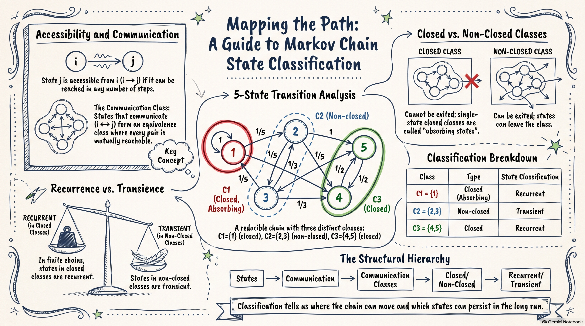
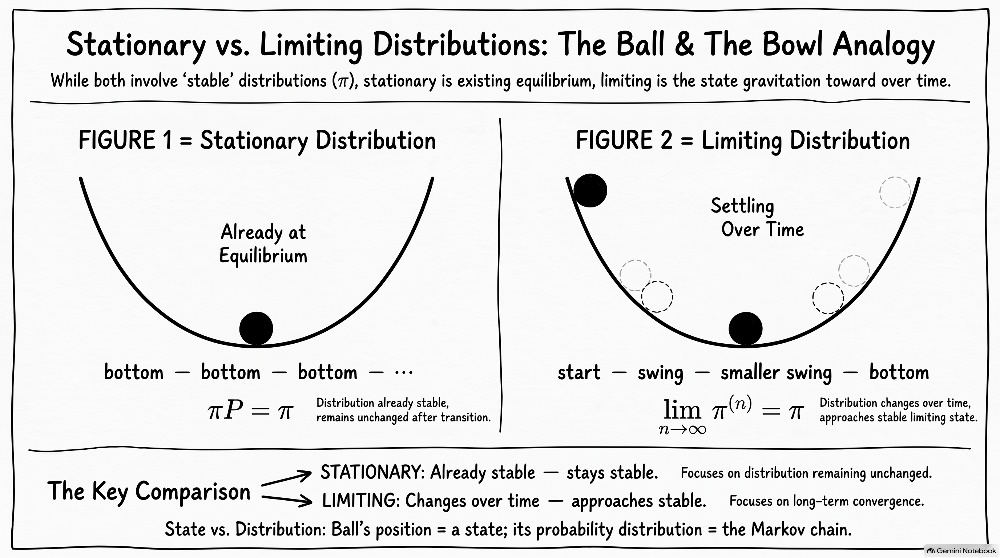
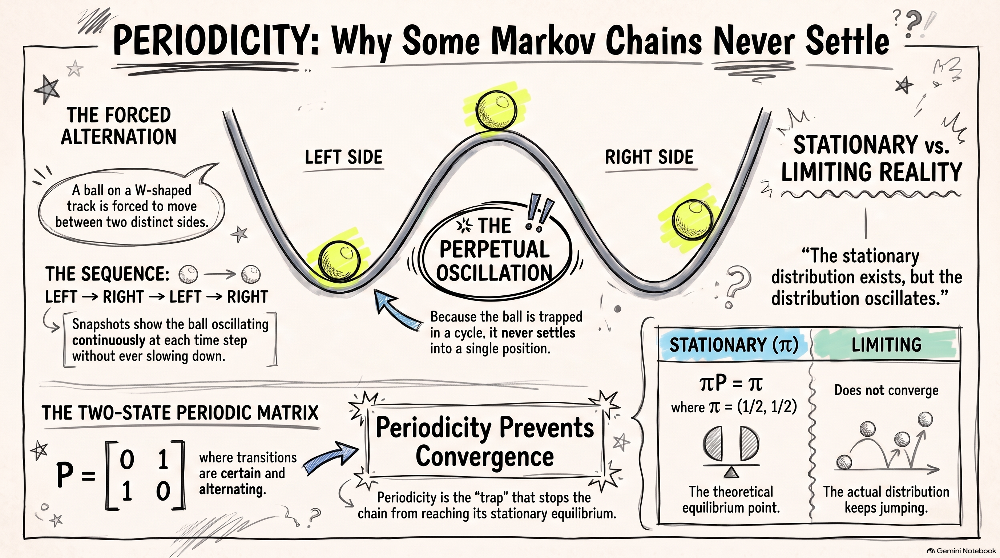

Code
set.seed(123)
n <- 100
Z <- sample(
c(-1, 1),
size = n,
replace = TRUE
)
X <- c(0, cumsum(Z))
plot(
0:n, X,
type = "l",
xlab = "Time, n",
ylab = "X_n",
main = "One Realisation of a Simple Random Walk"
)
After studying this chapter, students should be able to:
One of the simplest examples of a stochastic process is a simple random walk. It provides a natural starting point for studying discrete-time Markov chains because the distribution of the next state depends only on the current state.
Consider a simple model of the price of a stock, measured in baht. Suppose that, at the end of each trading day, the stock price either increases by 1 baht with probability \(p\) or decreases by 1 baht with probability \(q=1-p\). Let \(X_n\) denote the stock price after \(n\) trading days, with initial value
\[ X_0=a. \]
Thus,
\[ X_n=X_{n-1}+Z_n, \]
where the random change \(Z_n\) is given by
\[ Z_n= \begin{cases} 1, & \text{with probability }p,\\ -1, & \text{with probability }q=1-p. \end{cases} \]
Equivalently,
\[ X_n=a+\sum_{i=1}^n Z_i. \]
This process is called a simple random walk.
The time index is discrete, \(n=0,1,2,\ldots\), and the state space is also discrete. A realisation of the process is a sequence of values
\[ X_0,X_1,X_2,\ldots \]
obtained from one particular sequence of random changes \(Z_1,Z_2,\ldots\). Such a sequence is called a sample path.
For example, if \(X_0=100\) and the successive changes are
\[ +1,\quad -1,\quad +1,\quad +1,\quad -1, \]
then the corresponding sample path is
\[ 100,\quad 101,\quad 100,\quad 101,\quad 102,\quad 101. \]
Different sequences of random changes produce different sample paths. The random walk therefore describes a collection of possible paths rather than a single deterministic sequence.
The random variables \(Z_1,Z_2,\ldots\) are assumed to be independent and identically distributed. In particular,
\[ \Pr(Z_i=1)=p, \qquad \Pr(Z_i=-1)=q=1-p. \]
The expected value and variance of each random change are
\[ \begin{aligned} \mu &=\mathrm{E}[Z_i]\\ &=p-q\\ &=2p-1, \end{aligned} \]
and
\[ \begin{aligned} \sigma^2 &=\mathrm{Var}(Z_i)\\ &=\mathrm{E}[Z_i^2]-{\mathrm{E}[Z_i]}^2\\ &=1-(p-q)^2\\ &=4pq. \end{aligned} \]
When \(p=\frac12\), the upward and downward movements have equal probability. The random walk is then called a symmetric random walk. In this case,
\[ \mathrm{E}[Z_i]=0, \qquad \mathrm{Var}(Z_i)=1. \]
Since
\[ X_n=a+\sum_{i=1}^n Z_i, \]
the expectation of the process at time \(n\) is
\[ \begin{aligned} \mathrm{E}[X_n] &=a+\sum_{i=1}^n\mathrm{E}[Z_i]\\ &=a+n(p-q). \end{aligned} \]
Similarly, since the \(Z_i\) are independent,
\[ \begin{aligned} \mathrm{Var}(X_n) &=\mathrm{Var}\left(\sum_{i=1}^n Z_i\right)\\ &=\sum_{i=1}^n\mathrm{Var}(Z_i)\\ &=4npq. \end{aligned} \]
Thus,
\[ \boxed{ \mathrm{E}[X_n]=a+n(p-q), \qquad \mathrm{Var}(X_n)=4npq. } \]
In particular, for a symmetric random walk,
\[ \mathrm{E}[X_n]=a, \qquad \mathrm{Var}(X_n)=n. \]
The variance increases with time, reflecting the increasing uncertainty about the position of the random walk.
Suppose that \(X_0=100\). Consider the probability
\[ \Pr(X_2=98,X_5=99\mid X_0=100). \]
For \(X_2=98\), the process must decrease on both of the first two steps. This has probability
\[ q^2. \]
Starting from \(X_2=98\), we need to reach \(X_5=99\) after three further steps. The net change must therefore be \(+1\). This requires two upward steps and one downward step. There are
\[ {3\choose2}=3 \]
possible orders for these three steps, and each has probability \(p^2q\). Hence,
\[ \begin{aligned} \Pr(X_2=98,X_5=99\mid X_0=100) &=q^2{3\choose2}p^2q\\ &=3p^2q^3. \end{aligned} \]
This example illustrates an important feature of the random walk: probabilities concerning future states can be calculated by considering the sequence of random changes between the relevant time points.
The random walk has many possible sample paths. Simulation provides a simple way to visualise these paths and to see how the behaviour of the process changes across different realisations.
For simplicity, consider a symmetric random walk with
\[ p=q=\frac12 \]
and initial value \(X_0=0\). At each step, the process moves one unit upward or downward with equal probability.
A single realisation can be simulated by generating independent random variables
\[ Z_1,Z_2,\ldots,Z_n, \]
where
\[ Z_i= \begin{cases} 1, & \text{with probability }1/2,\\ -1, & \text{with probability }1/2. \end{cases} \]
The corresponding sample path is then obtained from
\[ X_n=\sum_{i=1}^n Z_i. \]
The following R code generates and plots one realisation of a symmetric random walk over 100 steps.
set.seed(123)
n <- 100
Z <- sample(
c(-1, 1),
size = n,
replace = TRUE
)
X <- c(0, cumsum(Z))
plot(
0:n, X,
type = "l",
xlab = "Time, n",
ylab = "X_n",
main = "One Realisation of a Simple Random Walk"
)
The first value of X is \(X_0=0\). The function cumsum() then calculates the cumulative sum of the successive changes, giving
\[ X_1,X_2,\ldots,X_n. \]
The resulting graph is one possible sample path of the random walk. A different sequence of random changes produces a different path.
The use of set.seed() makes the simulation reproducible. In particular, another user running the same code with the same seed obtains the same realisation.
A single sample path does not show the full range of possible behaviour. We can simulate several independent realisations and plot them together.
set.seed(123)
n <- 100
m <- 10
X <- matrix(0, nrow = n + 1, ncol = m)
for (j in 1:m) {
Z <- sample(
c(-1, 1),
size = n,
replace = TRUE
)
X[, j] <- c(0, cumsum(Z))
}
matplot(
0:n, X,
type = "l",
lty = 1,
xlab = "Time, n",
ylab = "X_n",
main = "Ten Realisations of a Simple Random Walk"
)
Each line represents one realisation of the same stochastic process. All paths start at \(X_0=0\), but they evolve differently because the random changes are different.
Some paths may move substantially above zero, while others may move below zero. Some may return to zero many times. This variation is a consequence of the randomness in the process.
The simulation also illustrates an important distinction:
Thus, the lines in the figure are not different stochastic processes. They are different realisations of the same simple random walk.
The same simulation can be used when the probabilities of upward and downward movements are unequal. Suppose
\[ p=\Pr(Z_i=1)=0.6, \qquad q=\Pr(Z_i=-1)=0.4. \]
The random walk now has a positive expected increment,
\[ \mathrm{E}[Z_i]=p-q=0.2. \]
Consequently,
\[ \mathrm{E}[X_n]=0.2n \]
when \(X_0=0\). We can simulate several realisations as follows.
set.seed(123)
n <- 100
m <- 10
p <- 0.6
X <- matrix(0, nrow = n + 1, ncol = m)
for (j in 1:m) {
Z <- ifelse(
runif(n) < p,
1,
-1
)
X[, j] <- c(0, cumsum(Z))
}
matplot(
0:n, X,
type = "l",
lty = 1,
xlab = "Time, n",
ylab = "X_n",
main = "Ten Realisations of a Simple Random Walk (p = 0.6)"
)
Compared with the symmetric case, the paths tend to move upward over time. This does not mean that every realisation increases at every step. A particular path can still move downward for several consecutive steps. The positive value of \(\mathrm{E}[Z_i]\) describes the average direction of the process across repeated realisations.
Simulation therefore gives a useful visual interpretation of the quantities
\[ \mathrm{E}[X_n] \quad\text{and}\quad \mathrm{Var}(X_n), \]
while the mathematical results describe these features exactly.
Suppose that \(X_0=0\). After \(n\) steps, let \(A\) be the number of upward steps and \(B\) the number of downward steps. Then
\[ A+B=n \]
and
\[ X_n=A-B. \]
For example, after \(2n\) steps, the random walk can only be at an even integer. If
\[ X_{2n}=2m, \]
then
\[ A-B=2m, \qquad A+B=2n. \]
Solving these equations gives
\[ A=n+m, \qquad B=n-m. \]
Since \(A\) has a binomial distribution with parameters \(2n\) and \(p\),
\[ \Pr(X_{2n}=2m) ={2n\choose n+m}p^{n+m}q^{n-m}, \qquad -n\leq m\leq n. \]
Similarly, after \(2n+1\) steps, the random walk can only be at an odd integer. For \(-n-1\leq m\leq n\),
\[ \Pr(X_{2n+1}=2m+1) ={2n+1\choose n+m+1} p^{n+m+1}q^{n-m}. \]
These results show that the distribution of the random walk can be obtained from the binomial distribution.
Consider the random walk at time \(n\). Once the current value \(X_n\) is known, the distribution of the next value \(X_{n+1}\) is determined by
\[ \Pr(X_{n+1}=X_n+1\mid X_n)=p \]
and
\[ \Pr(X_{n+1}=X_n-1\mid X_n)=q. \]
The earlier values
\[ X_0,X_1,\ldots,X_{n-1} \]
do not affect these probabilities once \(X_n\) is known.
For example, suppose that \(X_n=100\). Regardless of how the process arrived at 100, the probability that the next value is 101 is \(p\), while the probability that the next value is 99 is \(q\).
This property is the central idea behind a Markov chain. The random walk provides a simple example in which the future behaviour of the process depends on the present state, while the past is irrelevant once the present state is known. We formalise this idea in the next section.
Consider again the simple random walk model for the stock price. Suppose that the stock prices over the first four days are
\[ (X_0,X_1,X_2,X_3)=(100,99,98,99). \]
We want to determine the distribution of the stock price \(X_4\).
For the simple random walk, the price changes by \(1\) with probability \(p\) and by \(-1\) with probability \(q=1-p\). Since \(X_3=99\),
\[ \Pr(X_4=100\mid X_3=99)=p \]
and
\[ \Pr(X_4=98\mid X_3=99)=q. \]
The important point is that these probabilities do not depend on how the process arrived at \(X_3=99\). In particular,
\[ \Pr(X_4=j\mid X_0=100,X_1=99,X_2=98,X_3=99) =\Pr(X_4=j\mid X_3=99). \]
Thus, once the current state \(X_3\) is known, the earlier values \(X_0,X_1,X_2\) provide no additional information about the distribution of the next state.
This property is the key idea behind a Markov chain.
A stochastic process has the Markov property if, given its current state, the past does not provide additional information about its future evolution.
Let \(\{X_n:n=0,1,2,\ldots\}\) be a discrete-time stochastic process. The process has the Markov property if, for every \(n\),
\[ \Pr(X_{n+1}=j\mid X_0=i_0,\ldots,X_{n-1}=i_{n-1},X_n=i) =\Pr(X_{n+1}=j\mid X_n=i), \]
whenever the conditional probabilities are defined.
The left-hand side uses the entire history of the process up to time \(n\). The right-hand side uses only the current state \(X_n=i\).
The Markov property can therefore be expressed informally as
\[ \boxed{\text{past} \longrightarrow \text{current state} \longrightarrow \text{future}.} \]
The current state contains all the information from the past that is relevant for predicting the next state.
The Markov property also extends to the whole future of the process. Given the current state \(X_n\), the future
\[ X_{n+1},X_{n+2},\ldots \]
is conditionally independent of the past
\[ X_0,X_1,\ldots,X_{n-1}. \]
For example, for a set of possible future states,
\[ \begin{aligned} &\Pr(X_{n+1}=i_{n+1},\ldots,X_{n+m}=i_{n+m}\mid X_0=i_0,\ldots,X_n=i_n)\\ &= \Pr(X_{n+1}=i_{n+1},\ldots,X_{n+m}=i_{n+m}\mid X_n=i_n). \end{aligned} \]
This means that once \(X_n\) is known, the particular path taken to reach \(X_n\) does not affect the conditional distribution of the future.
Example 2.1 (Simple random walk) The simple random walk has the Markov property.
Suppose that \(X_n=i\). The next state can only be \(i+1\) or \(i-1\), with probabilities \(p\) and \(q=1-p\), respectively. Hence,
\[ \Pr(X_{n+1}=j\mid X_n=i)= \begin{cases} p, & j=i+1,\\ q, & j=i-1,\\ 0, & \text{otherwise}. \end{cases} \]
These probabilities depend only on the current state \(i\) and do not depend on the earlier states \(X_0,\ldots,X_{n-1}\). Therefore, the simple random walk satisfies the Markov property.
The Markov property does not mean that successive values of the process are independent. In fact, \(X_{n+1}\) generally depends on \(X_n\). The property states that, for predicting the future, the current state contains the information from the past that is relevant to the future.
A discrete-time Markov chain is a discrete-time stochastic process that satisfies the Markov property.
Let
\[ \{X_n:n=0,1,2,\ldots\} \]
be a stochastic process with state space \(S\). The process is a discrete-time Markov chain if
\[ \boxed{ \Pr(X_{n+1}=j\mid X_n=i,X_{n-1}=i_{n-1},\ldots,X_0=i_0) =\Pr(X_{n+1}=j\mid X_n=i) } \]
for every \(n\geq 0\) and all states for which the conditional probabilities are defined.
The state space \(S\) is the set of all possible values that the process can take. In many applications considered in this chapter, \(S\) is finite or countably infinite. For example,
\[ S\subseteq{0,1,2,\ldots}. \]
The simple random walk has state space
\[ S=\mathbb{Z} \]
when there are no boundaries, because the process can take any integer value.
The Markov property can be understood by comparing two conditional probabilities.
Suppose that the current state is \(i\). We can ask for the probability that the next state is \(j\):
\[ \Pr(X_{n+1}=j\mid X_n=i). \]
We could instead condition on the entire history,
\[ X_0=i_0,\ldots,X_{n-1}=i_{n-1},X_n=i. \]
For a Markov chain, the answer is the same:
\[ \Pr(X_{n+1}=j\mid X_0=i_0,\ldots,X_n=i) =\Pr(X_{n+1}=j\mid X_n=i). \]
Thus, the complete history can be replaced by the current state when determining the distribution of the next state.
For a discrete-time Markov chain,
\[ \boxed{ \text{distribution of the next state} =\text{a function of the current state only}. } \]
The process may depend on its past through the current state, but the past has no further effect once the current state is known.
The simple random walk is one example of a discrete-time Markov chain. Many actuarial models can also be formulated in this way.
For example, consider a no-claim discount (NCD) system. Let \(X_n\) denote the discount level of a policyholder after \(n\) policy years. Suppose the state space is
\[ S={0,1,2}, \]
where the states correspond to discount levels of \(0%\), \(20%\), and \(40%\).
Suppose that a claim-free year moves the policyholder up one level, unless the maximum level has already been reached, while a year with at least one claim moves the policyholder down one level, unless the policyholder is already at level \(0\).
If the probability of a claim-free year is \(p\) and is independent of the policy year, then the probability of the next discount level depends only on the current discount level. For example, if \(X_n=1\), then
\[ \Pr(X_{n+1}=0\mid X_n=1)=1-p \]
and
\[ \Pr(X_{n+1}=2\mid X_n=1)=p. \]
The previous discount levels \(X_0,\ldots,X_{n-1}\) do not affect these probabilities once \(X_n\) is known. Therefore, the NCD system is a discrete-time Markov chain.
The simple random walk and the NCD system have very different interpretations, but they share the same mathematical structure. In both cases, the current state is sufficient for determining the conditional distribution of the next state.
The next step is to describe these conditional probabilities systematically. This leads to the concept of one-step transition probabilities and their representation by a transition probability matrix.

The Markov property tells us that, given the current state, the past does not provide additional information about the next state. We can therefore describe the one-step evolution of a Markov chain by specifying the probability of moving from each current state to each possible next state.
Let \(\{X_n:n=0,1,2,\ldots\}\) be a discrete-time Markov chain with state space \(S\). The one-step transition probability from state \(i\) to state \(j\) at time \(n\) is
\[ p_{ij}^{(n,n+1)} =\Pr(X_{n+1}=j\mid X_n=i), \qquad i,j\in S. \]
The notation \(p_{ij}^{(n,n+1)}\) indicates that the transition is from state \(i\) at time \(n\) to state \(j\) at time \(n+1\).
For a fixed current state \(i\), the collection
\[ \left\{p_{ij}^{(n,n+1)}:j\in S\right\}, \qquad p_{ij}^{(n,n+1)} = \Pr(X_{n+1}=j\mid X_n=i). \]
describes the probability distribution of the next state given that the current state is \(i\).
Therefore,
\[ 0\leq p_{ij}^{(n,n+1)}\leq 1 \]
and
\[ \sum_{j\in S}p_{ij}^{(n,n+1)}=1. \]
The probabilities in a given row must sum to one because the process must move to one of the states in \(S\) at the next time point.
The quantity
\[ p_{ij}^{(n,n+1)} =\Pr(X_{n+1}=j\mid X_n=i) \]
is the probability that the chain moves from state \(i\) to state \(j\) in one time step.
The first subscript is the current state and the second subscript is the next state.
Consider a simple random walk with
\[ \Pr(Z_n=1)=p, \qquad \Pr(Z_n=-1)=q=1-p. \]
If \(X_n=i\), then the next state is either \(i+1\) or \(i-1\). Hence,
\[ p_{ij}^{(n,n+1)} =\begin{cases} p, & j=i+1,\\ q, & j=i-1,\\ 0, & \text{otherwise}. \end{cases} \]
For example,
\[ \Pr(X_{n+1}=6\mid X_n=5)=p \]
and
\[ \Pr(X_{n+1}=4\mid X_n=5)=q. \]
The probabilities do not depend on \(n\) because the rules governing the random walk are the same at every time point.
This leads to the important special case of a time-homogeneous Markov chain.
A Markov chain is time-homogeneous if the one-step transition probabilities do not depend on the time at which the transition occurs. That is,
\[ \Pr(X_{n+1}=j\mid X_n=i) =\Pr(X_1=j\mid X_0=i) \]
for all \(n\geq 0\) and \(i,j\in S\).
In this case, we write
\[ p_{ij} =\Pr(X_{n+1}=j\mid X_n=i). \]
The transition probability is therefore determined entirely by the current state \(i\) and the next state \(j\).
If the transition probabilities depend on \(n\), the chain is called time-inhomogeneous or non-homogeneous.
Unless stated otherwise, we will assume that Markov chains are time-homogeneous.
For a time-homogeneous Markov chain,
\[ \Pr(X_{n+1}=j\mid X_n=i)=p_{ij} \]
is the same at every time \(n\).
For a time-inhomogeneous Markov chain, the corresponding probability can change with time:
\[ \Pr(X_{n+1}=j\mid X_n=i)=p_{ij}^{(n,n+1)}. \]
For a time-homogeneous Markov chain, all one-step transition probabilities can be collected into a matrix.
The transition probability matrix, denoted by \(P\), is the matrix whose \((i,j)\)-th entry is
\[ p_{ij}=\Pr(X_{n+1}=j\mid X_n=i). \]
Thus,
\[ P=(p_{ij})_{i,j\in S}. \]
For a finite state space \(S={1,2,\ldots,d}\),
\[ P= \begin{pmatrix} p_{11} & p_{12} & \cdots & p_{1d}\\ p_{21} & p_{22} & \cdots & p_{2d}\\ \vdots & \vdots & \ddots & \vdots\\ p_{d1} & p_{d2} & \cdots & p_{dd} \end{pmatrix}. \]
The rows correspond to the current state and the columns correspond to the next state.
For example, the entry \(p_{23}\) is the probability of moving from state \(2\) to state \(3\) in one time step:
\[ p_{23}=\Pr(X_{n+1}=3\mid X_n=2). \]
Since each row gives a probability distribution over the possible next states,
\[ p_{ij}\geq 0 \]
and
\[ \sum_{j\in S}p_{ij}=1 \]
for every \(i\in S\).
A matrix satisfying these two properties is called a stochastic matrix.
For a time-homogeneous Markov chain,
\[ \boxed{ P=(p_{ij}),\qquad p_{ij}=\Pr(X_{n+1}=j\mid X_n=i). } \]
Each row of \(P\) describes the probability distribution of the next state given the current state.
Consider the NCD system introduced earlier, with state space
\[ S={0,1,2}, \]
where the states correspond to discount levels of \(0%\), \(20%\), and \(40%\).
Suppose that the probability of a claim-free year is \(p\) and the probability of at least one claim is \(1-p\). The rules are:
The transition probabilities are therefore
\[ \begin{aligned} p_{00}&=1-p, & p_{01}&=p, & p_{02}&=0,\\ p_{10}&=1-p, & p_{11}&=0, & p_{12}&=p,\\ p_{20}&=0, & p_{21}&=1-p, & p_{22}&=p. \end{aligned} \]
Hence, the transition matrix is
\[ P= \begin{pmatrix} 1-p & p & 0\\ 1-p & 0 & p\\ 0 & 1-p & p \end{pmatrix}. \]

For example, the second row gives the probabilities of the next NCD level when the current level is \(1\):
\[ \Pr(X_{n+1}=0\mid X_n=1)=1-p, \]
\[ \Pr(X_{n+1}=1\mid X_n=1)=0, \]
and
\[ \Pr(X_{n+1}=2\mid X_n=1)=p. \]
The row sums to one:
\[ (1-p)+0+p=1. \]
The transition matrix provides a compact representation of the rules governing the NCD system. Once the current state is known, the corresponding row of \(P\) gives the probability distribution of the next state.
Consider a health insurance system in which a policyholder is classified at the end of each day as Healthy, Sick, or Dead. Let
\[ S={H,S,D}. \]
Suppose the transition probability matrix is
\[ P= \begin{pmatrix} p_{HH} & p_{HS} & p_{HD}\\ p_{SH} & p_{SS} & p_{SD}\\ 0 & 0 & 1 \end{pmatrix}. \]

The entry
\[ p_{HS} =\Pr(X_{n+1}=S\mid X_n=H) \]
is the probability that a healthy policyholder becomes sick during the next day.
Similarly,
\[ p_{HD} =\Pr(X_{n+1}=D\mid X_n=H) \]
is the probability that a healthy policyholder dies during the next day.
The last row is
\[ (0,0,1), \]
which means that once the process enters state \(D\), it remains there. Thus, \(D\) is an absorbing state.
We will return to absorbing states and their properties later in the chapter.
The transition matrix gives a complete description of the one-step behaviour of a time-homogeneous Markov chain. For a finite state space, instead of specifying each conditional probability separately, we can work with the single matrix \(P\).
For example, if the current state is known to be \(i\), then the \(i\)-th row of \(P\) gives
\[ \Pr(X_{n+1}=j\mid X_n=i), \qquad j\in S. \]
This matrix representation also allows us to study transitions over several time steps using matrix multiplication. The next section develops this idea through \(n\)-step transition probabilities and the Chapman–Kolmogorov equation.
The transition matrix \(P\) describes how a Markov chain moves from one state to another in one time step. In many applications, however, we are interested in what happens over several time steps.
For example, in the NCD system, we may want to know the probability that a policyholder currently at discount level \(1\) will be at discount level \(2\) three years from now. This is a three-step transition probability.
Let \(\{X_n:n=0,1,2,\ldots\}\) be a time-homogeneous Markov chain with state space \(S\). The \(n\)-step transition probability from state \(i\) to state \(j\) is
\[ p_{ij}^{(n)} = \Pr(X_{m+n}=j\mid X_m=i). \]
For a time-homogeneous Markov chain, this probability does not depend on the starting time \(m\). Thus, we can equivalently write
\[ p_{ij}^{(n)} = \Pr(X_n=j\mid X_0=i). \]
The superscript \((n)\) indicates the number of transitions, not a power of the probability \(p_{ij}\).
In particular,
\[ p_{ij}^{(1)} = \Pr(X_{n+1}=j\mid X_n=i) = p_{ij}. \]
Thus, the one-step transition probabilities are the special case \(n=1\).
The quantity
\[ p_{ij}^{(n)} = \Pr(X_{m+n}=j\mid X_m=i) \]
is the probability that the chain is in state \(j\) \(n\) steps after starting in state \(i\).
Suppose that the chain starts in state \(i\) and we want to calculate the probability that it is in state \(j\) after two steps.
The chain must be in some state \(k\) after the first step. Therefore, we consider all possible intermediate states \(k\in S\).
For a particular intermediate state \(k\),
\[ \Pr(X_2=j\mid X_0=i,X_1=k) = \Pr(X_2=j\mid X_1=k) = p_{kj}, \]
by the Markov property.
Also,
\[ \Pr(X_1=k\mid X_0=i)=p_{ik}. \]
Therefore,
\[ \begin{aligned} \Pr(X_2=j\mid X_0=i) &= \sum_{k\in S} \Pr(X_2=j,X_1=k\mid X_0=i)\\ &= \sum_{k\in S} \Pr(X_2=j\mid X_1=k,X_0=i) \Pr(X_1=k\mid X_0=i)\\ &= \sum_{k\in S} p_{kj}p_{ik}. \end{aligned} \]
Hence,
\[ \boxed{ p_{ij}^{(2)} = \sum_{k\in S}p_{ik}p_{kj}. } \]
The two-step transition probability is therefore obtained by considering all possible intermediate states and adding the probabilities of the corresponding two-step paths.
Consider the NCD system with transition matrix
\[ P= \begin{pmatrix} 1-p & p & 0\\ 1-p & 0 & p\\ 0 & 1-p & p \end{pmatrix}. \]
Suppose that the policyholder is currently in state \(1\). To find the probability of being in state \(2\) two years later, there are two possible intermediate states.
The chain can move
\[ 1\longrightarrow 0\longrightarrow 2 \]
or
\[ 1\longrightarrow 2\longrightarrow 2. \]
Therefore,
\[ \begin{aligned} p_{12}^{(2)} &= p_{10}p_{02}+p_{12}p_{22}\\ &= (1-p)(0)+p(p)\\ &= p^2. \end{aligned} \]
Thus,
\[ \Pr(X_{n+2}=2\mid X_n=1)=p^2. \]
This calculation illustrates the general principle: to calculate a multi-step transition probability, consider all possible paths through the intermediate states.
The same argument can be extended to an arbitrary number of steps.
Suppose that the chain starts in state \(i\) and we want to find the probability of reaching state \(j\) after \(n\) steps. Choose an intermediate time \(l\), where
\[ 0<l<n. \]
At time \(l\), the chain must be in some state \(k\in S\). We can therefore divide the journey into two parts:
\[ i \overset{l\text{ steps}}{\longrightarrow} k \overset{n-l\text{ steps}}{\longrightarrow} j. \]
For a particular intermediate state \(k\),
\[ \Pr(X_l=k\mid X_0=i)=p_{ik}^{(l)} \]
and, by the Markov property,
\[ \Pr(X_n=j\mid X_l=k,X_0=i) = \Pr(X_n=j\mid X_l=k) = p_{kj}^{(n-l)}. \]
Summing over all possible intermediate states gives
\[ \boxed{ p_{ij}^{(n)} = \sum_{k\in S} p_{ik}^{(l)}p_{kj}^{(n-l)}, \qquad 0<l<n. } \]
This is the Chapman–Kolmogorov equation.

Starting from the definition of the \(n\)-step transition probability,
\[ p_{ij}^{(n)} = \Pr(X_n=j\mid X_0=i), \]
we partition the event according to the state occupied at time \(l\):
\[ \begin{aligned} p_{ij}^{(n)} &= \sum_{k\in S} \Pr(X_n=j,X_l=k\mid X_0=i)\\ &= \sum_{k\in S} \Pr(X_n=j\mid X_l=k,X_0=i) \Pr(X_l=k\mid X_0=i)\\ &= \sum_{k\in S} \Pr(X_n=j\mid X_l=k) \Pr(X_l=k\mid X_0=i)\\ &= \sum_{k\in S} p_{kj}^{(n-l)}p_{ik}^{(l)}. \end{aligned} \]
Hence,
\[ \boxed{ p_{ij}^{(n)} = \sum_{k\in S} p_{ik}^{(l)}p_{kj}^{(n-l)}. } \]
The equation states that an \(n\)-step transition can be decomposed into an \(l\)-step transition followed by an \((n-l)\)-step transition.
For a time-homogeneous Markov chain,
\[ \boxed{ p_{ij}^{(n)} = \sum_{k\in S} p_{ik}^{(l)}p_{kj}^{(n-l)}, \qquad 0<l<n. } \]
The intermediate state \(k\) is summed over all possible states of the chain at the intermediate time.
The Chapman–Kolmogorov equation has a simple matrix interpretation.
Let
\[ P^{(n)}=(p_{ij}^{(n)}) \]
denote the matrix of \(n\)-step transition probabilities. The Chapman–Kolmogorov equation gives
\[ P^{(n)} = P^{(l)}P^{(n-l)}. \]
For a time-homogeneous Markov chain,
\[ P^{(1)}=P. \]
Consequently,
\[ P^{(2)}=P^2, \]
\[ P^{(3)}=P^3, \]
and, in general,
\[ \boxed{ P^{(n)}=P^n. } \]
Thus, the \((i,j)\)-th entry of \(P^n\) is the \(n\)-step transition probability:
\[ \boxed{ (P^n)_{ij} = p_{ij}^{(n)} = \Pr(X_{m+n}=j\mid X_m=i). } \]
This is one of the main reasons why transition matrices are useful. Multi-step probabilities can be calculated using ordinary matrix multiplication.
Example 2.2 (NCD system: a three-year transition) Consider the NCD system with \(p=3/4\), so that the transition matrix is
\[ P= \begin{pmatrix} 1/4 & 3/4 & 0\\ 1/4 & 0 & 3/4\\ 0 & 1/4 & 3/4 \end{pmatrix}. \]
Suppose that a policyholder is currently in state \(1\). What is the probability that the policyholder will be in state \(1\) three years later?
We first calculate
\[ P^3 = \begin{pmatrix} 7/64 & 21/64 & 9/16\\ 7/64 & 3/16 & 45/64\\ 1/16 & 15/64 & 45/64 \end{pmatrix}. \]
The required probability is the \((1,1)\) entry of \(P^3\):
\[ \Pr(X_{n+3}=1\mid X_n=1) = p_{11}^{(3)} = (P^3)_{11} = \frac{3}{16}. \]
Thus, the probability of returning to discount level \(1\) after three years, given that the current level is \(1\), is
\[ \boxed{\frac{3}{16}}. \]
The matrix calculation above combines the probabilities of all possible three-step paths from state \(1\) to state \(1\).
For example, one possible path is
\[ 1\longrightarrow 0\longrightarrow 1\longrightarrow 1. \]
Its probability is
\[ p_{10}p_{01}p_{11}. \]
Another possible path is
\[ 1\longrightarrow 2\longrightarrow 1\longrightarrow 1, \]
with probability
\[ p_{12}p_{21}p_{11}. \]
The entry \((P^3)_{11}\) adds the probabilities of all possible three-step paths that start at state \(1\) and finish at state \(1\).
This gives a useful interpretation of matrix multiplication in Markov chains:
\[ \boxed{ \text{matrix multiplication} \quad\longleftrightarrow\quad \text{summing probabilities over intermediate states}. } \]
The transition matrix describes conditional probabilities given the current state. We can also use it to determine the unconditional distribution of the process.
Let the initial distribution of \(X_0\) be
\[ \boldsymbol{\mu}^{(0)} = (\mu_0,\mu_1,\ldots), \]
where
\[ \mu_i=\Pr(X_0=i). \]
Let
\[ \boldsymbol{\mu}^{(n)} = (\mu_0^{(n)},\mu_1^{(n)},\ldots) \]
denote the distribution of \(X_n\), where
\[ \mu_j^{(n)}=\Pr(X_n=j). \]
Using the law of total probability,
\[ \begin{aligned} \Pr(X_{n+1}=j) &= \sum_{i\in S} \Pr(X_{n+1}=j\mid X_n=i)\Pr(X_n=i)\\ &= \sum_{i\in S} p_{ij}\mu_i^{(n)}. \end{aligned} \]
In matrix notation,
\[ \boxed{ \boldsymbol{\mu}^{(n+1)} = \boldsymbol{\mu}^{(n)}P. } \]
Applying this relation repeatedly gives
\[ \boxed{ \boldsymbol{\mu}^{(n)} = \boldsymbol{\mu}^{(0)}P^n. } \]
Therefore, once the initial distribution and transition matrix are known, the distribution of the process at any future time can be calculated.
If
\[ \boldsymbol{\mu}^{(0)} = (\Pr(X_0=i))_{i\in S} \]
is the initial distribution and \(P\) is the transition matrix, then
\[ \boxed{ \boldsymbol{\mu}^{(n)} = \boldsymbol{\mu}^{(0)}P^n. } \]
The \(j\)-th component gives
\[ \Pr(X_n=j) = \left(\boldsymbol{\mu}^{(0)}P^n\right)_j. \]
The distinction between the two types of probabilities is useful:
| Quantity | Interpretation |
|---|---|
| \((P^n)_{ij}\) | Probability of being in state \(j\) after \(n\) steps, given that the chain starts in state \(i\) |
| \((\boldsymbol{\mu}^{(0)}P^n)_j\) | Probability of being in state \(j\) after \(n\) steps, given an initial distribution \(\boldsymbol{\mu}^{(0)}\) |
The first is a conditional probability based on a specified initial state. The second is an unconditional probability based on a probability distribution for the initial state.
Example 2.3 (NCD system: distribution after three years) Suppose again that
\[ P= \begin{pmatrix} 1/4 & 3/4 & 0\\ 1/4 & 0 & 3/4\\ 0 & 1/4 & 3/4 \end{pmatrix} \]
and that the policyholder starts in state \(1\) with probability one. Then
\[ \boldsymbol{\mu}^{(0)} = (0,1,0). \]
After three years,
\[ \boldsymbol{\mu}^{(3)} = \boldsymbol{\mu}^{(0)}P^3. \]
Since \(\boldsymbol{\mu}^{(0)}\) selects the second row of \(P^3\),
\[ \boldsymbol{\mu}^{(3)} = \left( \frac{7}{64}, \frac{3}{16}, \frac{45}{64} \right). \]
Thus,
\[ \Pr(X_3=0)=\frac{7}{64}, \]
\[ \Pr(X_3=1)=\frac{3}{16}, \]
and
\[ \Pr(X_3=2)=\frac{45}{64}. \]
As a check,
\[ \frac{7}{64}+\frac{3}{16}+\frac{45}{64}=1. \]
The transition matrix therefore allows us to move between three related levels of description:
\[ \boxed{ P \quad\longrightarrow\quad P^n \quad\longrightarrow\quad \boldsymbol{\mu}^{(0)}P^n. } \]
Here,
These results provide the basic computational framework for discrete-time Markov chains. We can now use them to study more detailed questions about the joint behaviour of the process and, later, its long-run behaviour.
The transition probabilities developed so far describe the state of a Markov chain at one future time. For example,
\[ p_{ij}^{(n)} = \Pr(X_{m+n}=j\mid X_m=i) \]
gives the probability of reaching state \(j\) after \(n\) steps, given that the chain starts in state \(i\).
In some applications, however, we are interested in the probability of observing a particular sequence of states. For example,
\[ \Pr(X_0=i_0,X_1=i_1,\ldots,X_n=i_n). \]
Such a probability is a joint probability because it involves several random variables simultaneously.
The Markov property makes these probabilities particularly simple to calculate.
Let \(\{X_n:n=0,1,2,\ldots\}\) be a time-homogeneous Markov chain with initial distribution
\[ \boldsymbol{\mu} = (\mu_i)_{i\in S}, \qquad \mu_i=\Pr(X_0=i), \]
and transition matrix \(P=(p_{ij})\).
Consider a particular path
\[ i_0\longrightarrow i_1\longrightarrow\cdots\longrightarrow i_n. \]
By the multiplication rule for conditional probabilities,
\[ \begin{aligned} &\Pr(X_0=i_0,X_1=i_1,\ldots,X_n=i_n)\\ &= \Pr(X_0=i_0) \Pr(X_1=i_1\mid X_0=i_0)\\ &\qquad\times \Pr(X_2=i_2\mid X_0=i_0,X_1=i_1) \cdots\\ &\qquad\times \Pr(X_n=i_n\mid X_0=i_0,\ldots,X_{n-1}=i_{n-1}). \end{aligned} \]
The Markov property allows each conditional probability after the first step to depend only on the state immediately before the transition. Therefore,
\[ \boxed{ \Pr(X_0=i_0,X_1=i_1,\ldots,X_n=i_n) = \mu_{i_0} p_{i_0i_1} p_{i_1i_2} \cdots p_{i_{n-1}i_n}. } \]
Thus, the probability of a particular path is the product of the initial probability and the transition probabilities along the path.
For a time-homogeneous Markov chain,
\[ \boxed{ \Pr(X_0=i_0,\ldots,X_n=i_n) = \mu_{i_0} \prod_{r=0}^{n-1}p_{i_ri_{r+1}}. } \]
The formula applies to a specific sequence of states. If several paths satisfy an event of interest, their probabilities must be added.
Example 2.4 (A path in the NCD system) Consider the NCD system with states
\[ S=\{0,1,2\} \]
and transition matrix
\[ P= \begin{pmatrix} 1/4 & 3/4 & 0\\ 1/4 & 0 & 3/4\\ 0 & 1/4 & 3/4 \end{pmatrix}. \]
Suppose the initial distribution is
\[ \boldsymbol{\mu}=(0.5,0.3,0.2). \]
Find the probability of the path
\[ X_0=2,\qquad X_1=1,\qquad X_2=0. \]
The path is
\[ 2\longrightarrow1\longrightarrow0. \]
Therefore,
\[ \begin{aligned} \Pr(X_0=2,X_1=1,X_2=0) &= \mu_2p_{21}p_{10}\\ &= 0.2\left(\frac14\right)\left(\frac14\right)\\ &= \frac{1}{80}. \end{aligned} \]
Hence,
\[ \boxed{ \Pr(X_0=2,X_1=1,X_2=0)=\frac{1}{80}. } \]
The calculation does not require us to consider the entire transition matrix. We only need the initial probability of state \(2\) and the transition probabilities along the specified path.
The same idea applies when the initial state is given.
Suppose that \(X_n=i_n\) is known, and consider a particular future path
\[ i_n\longrightarrow i_{n+1}\longrightarrow\cdots\longrightarrow i_{n+m}. \]
The Markov property gives
\[ \begin{aligned} &\Pr( X_{n+1}=i_{n+1}, \ldots, X_{n+m}=i_{n+m} \mid X_n=i_n)\\ &= p_{i_ni_{n+1}} p_{i_{n+1}i_{n+2}} \cdots p_{i_{n+m-1}i_{n+m}}. \end{aligned} \]
More generally, conditioning on the entire history up to time \(n\) does not change this probability:
\[ \begin{aligned} &\Pr( X_{n+1}=i_{n+1}, \ldots, X_{n+m}=i_{n+m} \mid X_n=i_n,\ldots,X_0=i_0)\\ &= \Pr( X_{n+1}=i_{n+1}, \ldots, X_{n+m}=i_{n+m} \mid X_n=i_n). \end{aligned} \]
This is a direct consequence of the Markov property.
Example 2.5 (A future path in the NCD system) Suppose the policyholder is currently in state \(2\). Find the probability of the future path
\[ 2\longrightarrow1\longrightarrow0. \]
Using the transition matrix above,
\[ \begin{aligned} &\Pr(X_{n+1}=1,X_{n+2}=0\mid X_n=2)\\ &= p_{21}p_{10}\\ &= \frac14\cdot\frac14\\ &= \frac{1}{16}. \end{aligned} \]
Thus,
\[ \boxed{ \Pr(X_{n+1}=1,X_{n+2}=0\mid X_n=2) = \frac{1}{16}. } \]
Notice that the initial distribution \(\boldsymbol{\mu}\) is not needed because the current state is already specified.
The path does not need to be observed at every time point.
Suppose that
\[ 0\leq n_1<n_2<\cdots<n_k \]
and that we want to calculate
\[ \Pr(X_{n_1}=i_1,\ldots,X_{n_k}=i_k). \]
The first state, \(X_{n_1}\), has distribution
\[ \Pr(X_{n_1}=i_1) = (\boldsymbol{\mu}P^{n_1})_{i_1}. \]
After reaching \(i_1\) at time \(n_1\), the probability of reaching \(i_2\) at time \(n_2\) is
\[ p_{i_1i_2}^{(n_2-n_1)} = (P^{n_2-n_1})_{i_1i_2}. \]
The same argument applies to each subsequent transition. Hence,
\[ \boxed{ \begin{aligned} &\Pr(X_{n_1}=i_1,\ldots,X_{n_k}=i_k)\\ &= (\boldsymbol{\mu}P^{n_1})_{i_1} (P^{n_2-n_1})_{i_1i_2} \cdots (P^{n_k-n_{k-1}})_{i_{k-1}i_k}. \end{aligned} } \]
This formula combines the two main results developed so far:
For
\[ 0\leq n_1<n_2<\cdots<n_k, \]
the joint probability is
\[ \boxed{ \Pr(X_{n_1}=i_1,\ldots,X_{n_k}=i_k) = (\boldsymbol{\mu}P^{n_1})_{i_1} \prod_{r=2}^{k} (P^{n_r-n_{r-1}})_{i_{r-1}i_r}. } \]
Thus, the joint distribution of a Markov chain is determined by its initial distribution and its transition matrix.
Example 2.6 (Weather model) Consider the weather model with states
\[ S=\{R,C,S\}, \]
where \(R\), \(C\), and \(S\) denote rainy, cloudy, and sunny days. Suppose the transition matrix is
\[ P= \begin{pmatrix} 0.7&0.2&0.1\\ 0.75&0.15&0.1\\ 0.2&0.4&0.4 \end{pmatrix}. \]
Suppose that on Sunday the three weather states have equal probabilities:
\[ \boldsymbol{\mu} = \left(\frac13,\frac13,\frac13\right). \]
Find the probability that it is sunny on Wednesday and Friday, and cloudy on Saturday.
Wednesday is three days after Sunday, Friday is two days after Wednesday, and Saturday is one day after Friday. Therefore,
\[ \begin{aligned} &\Pr(X_3=S,X_5=S,X_6=C)\\ &= (\boldsymbol{\mu}P^3)_S (P^2)_{SS} P_{SC}. \end{aligned} \]
Using
\[ \boldsymbol{\mu}P^3 = (0.631375,\;0.220625,\;0.148), \]
together with
\[ (P^2)_{SS}=0.22 \qquad\text{and}\qquad P_{SC}=0.4, \]
we obtain
\[ \begin{aligned} \Pr(X_3=S,X_5=S,X_6=C) &= 0.148(0.22)(0.4)\\ &= 0.013024. \end{aligned} \]
Hence,
\[ \boxed{ \Pr(X_3=S,X_5=S,X_6=C)=0.013024. } \]
The important point is that we do not need to specify the weather on Thursday. The two-day transition probability
\[ (P^2)_{SS} \]
automatically accounts for all possible weather states on Thursday.
A joint probability may involve a specific path, such as
\[ \Pr(X_0=i_0,X_1=i_1,X_2=i_2), \]
but many questions of interest concern an event that can occur through several different paths.
For example, suppose we want
\[ \Pr(X_2=j\mid X_0=i). \]
There may be many possible states at time \(1\). Therefore,
\[ \begin{aligned} \Pr(X_2=j\mid X_0=i) &= \sum_{k\in S} \Pr(X_2=j,X_1=k\mid X_0=i)\\ &= \sum_{k\in S} p_{ik}p_{kj}. \end{aligned} \]
This is precisely the two-step transition probability
\[ p_{ij}^{(2)}. \]
Thus, the Chapman–Kolmogorov equation can be viewed as a way of summing the probabilities of all paths that connect two states over a specified number of steps.
This gives a useful connection between the results developed in this chapter:
\[ \boxed{ \begin{array}{c} \text{Path probabilities}\\[2mm] \downarrow\\ \text{Sum over intermediate states}\\[2mm] \downarrow\\ \text{$n$-step transition probabilities}\\[2mm] \downarrow\\ \text{Matrix powers }P^n \end{array} } \]
The next section applies these ideas to a familiar process—the random walk—when its state space has absorbing or reflecting boundaries.
The simple random walk introduced at the beginning of this chapter allows the process to move freely between neighbouring states. In many applications, however, the process is subject to boundaries.
For example, consider the fortune of a gambler. If the gambler’s fortune reaches \(0\), the gambler is ruined and the game ends. Similarly, suppose the game ends when the gambler reaches a target fortune \(N\). The states \(0\) and \(N\) then act as boundaries that the process cannot leave.
Boundaries can also behave differently. A boundary may stop the process permanently, or it may force the process back into the interior of the state space.
These situations lead to two useful types of boundary behaviour:
The transition matrix provides a convenient way to describe both types of random walks.
Consider a random walk on the finite state space
\[ S=\{0,1,\ldots,N\}. \]
Suppose that, for \(i=1,\ldots,N-1\),
\[ \Pr(X_{n+1}=i+1\mid X_n=i)=p, \]
and
\[ \Pr(X_{n+1}=i-1\mid X_n=i)=q, \]
where
\[ p+q=1. \]
Thus, when the process is in an interior state, it moves one step to the right with probability \(p\) and one step to the left with probability \(q\).
Now suppose that states \(0\) and \(N\) are absorbing. Once the process reaches either boundary, it remains there:
\[ p_{00}=1, \qquad p_{NN}=1. \]
The transition matrix is therefore
\[ P= \begin{pmatrix} 1 & 0 & 0 & 0 & \cdots & 0 & 0\\ q & 0 & p & 0 & \cdots & 0 & 0\\ 0 & q & 0 & p & \cdots & 0 & 0\\ \vdots & & \ddots & \ddots & \ddots & & \vdots\\ 0 & 0 & \cdots & q & 0 & p & 0\\ 0 & 0 & \cdots & 0 & q & 0 & p\\ 0 & 0 & \cdots & 0 & 0 & 0 & 1 \end{pmatrix}. \]
The transition diagram has the form
\[ 0 \longleftarrow 1 \longleftrightarrow 2 \longleftrightarrow \cdots \longleftrightarrow N-1 \longrightarrow N, \]
with states \(0\) and \(N\) absorbing.
A state \(i\) is called absorbing if
\[ p_{ii}=1. \]
Once a Markov chain enters an absorbing state, it remains there forever.
For the random walk above, both \(0\) and \(N\) are absorbing states. The states
\[ 1,2,\ldots,N-1 \]
are the interior states.
This model is often called the gambler’s ruin model. The state \(X_n\) can represent the gambler’s current fortune, with \(0\) representing ruin and \(N\) representing a target fortune at which the game stops.
Example 2.7 (Gambler’s ruin) A gambler starts with a fortune of \(i\) units and plays a sequence of independent games. In each game, the gambler:
The gambler stops playing when the fortune reaches either \(0\) or \(N\).
Let \(X_n\) denote the gambler’s fortune after \(n\) games.
The state space is
\[ S=\{0,1,\ldots,N\}. \]
States \(0\) and \(N\) are absorbing because
\[ p_{00}=p_{NN}=1. \]
For an interior state \(i\),
\[ p_{ij} = \begin{cases} q, & j=i-1,\\ p, & j=i+1,\\ 0, & \text{otherwise}. \end{cases} \]
Thus, the Markov chain has the same local movement as the simple random walk, but its behaviour changes when it reaches either boundary.
This example illustrates an important modelling idea: the transition rules determine the behaviour of the process at the boundaries.
A boundary does not always have to stop the process. In some applications, reaching a boundary means that the process is pushed back into the interior.
Consider a random walk on
\[ S=\{0,1,\ldots,N\}. \]
Suppose that for the interior states,
\[ \Pr(X_{n+1}=i+1\mid X_n=i)=p, \]
and
\[ \Pr(X_{n+1}=i-1\mid X_n=i)=q, \]
where \(p+q=1\).
At state \(0\), suppose that
\[ \Pr(X_{n+1}=0\mid X_n=0)=\alpha \]
and
\[ \Pr(X_{n+1}=1\mid X_n=0)=1-\alpha. \]
The process therefore cannot move to state \(-1\). Instead, it either remains at \(0\) or moves back to state \(1\).
In this case, state \(0\) is called a reflecting barrier.
For example, if \(\alpha=0\), then the process must move from \(0\) to \(1\) on the next step:
\[ p_{01}=1. \]
If \(0<\alpha<1\), the process may remain at the boundary for one or more periods before returning to the interior.
A similar construction can be used at the upper boundary \(N\).
The difference can be summarized as follows.
| Boundary type | Behaviour after reaching the boundary |
|---|---|
| Absorbing | The process remains at the boundary forever |
| Reflecting | The process can move back into the state space |
For an absorbing state \(i\),
\[ p_{ii}=1. \]
A reflecting barrier does not require \(p_{ii}=1\); the process may leave the boundary on the next step.
Suppose the state space is
\[ S=\{0,1,2,\ldots\} \]
and, for \(i\geq1\),
\[ \Pr(X_{n+1}=i+1\mid X_n=i)=p, \]
\[ \Pr(X_{n+1}=i-1\mid X_n=i)=q, \]
where \(p+q=1\).
At state \(0\), suppose
\[ \Pr(X_{n+1}=0\mid X_n=0)=\alpha, \]
and
\[ \Pr(X_{n+1}=1\mid X_n=0)=1-\alpha. \]
The transition matrix has the form
\[ P= \begin{pmatrix} \alpha & 1-\alpha & 0 & 0 & \cdots\\ q & 0 & p & 0 & \cdots\\ 0 & q & 0 & p & \cdots\\ 0 & 0 & q & 0 & \ddots\\ \vdots & \vdots & \vdots & \ddots & \ddots \end{pmatrix}. \]
The first row differs from the rows corresponding to the interior states because the process cannot move from \(0\) to \(-1\).
This is a useful example of how a transition matrix can encode boundary conditions directly.
The choice between absorbing and reflecting boundaries can lead to very different long-term behaviour.
With absorbing boundaries, the process eventually remains at a boundary once one is reached. For the gambler’s ruin model,
\[ X_n\in\{0,N\} \]
for all sufficiently large \(n\), once an absorbing boundary has been reached.
With reflecting boundaries, the process can continue moving indefinitely. It may return to the boundary many times, but it is not permanently trapped there.
These differences lead to questions that we will study later in the chapter, such as:
For now, the main point is that these questions can be formulated using the same Markov-chain framework developed earlier.
A random walk with boundaries is still a Markov chain. The boundary conditions are incorporated into its transition probabilities and therefore into its transition matrix.
Once the transition matrix has been specified, the methods developed earlier—such as matrix powers, \(n\)-step transition probabilities, and state distributions—remain available.
In a random walk with an absorbing barrier, reaching the barrier means that the process remains there permanently. This is described using the concept of an absorbing state.
Recall that a state \(i\) is called an absorbing state if
\[ p_{ii} = 1. \]
Thus, once the process enters an absorbing state, it cannot leave. For example, in a random walk with absorbing barriers at \(0\) and \(N\),
\[ p_{00} = 1 \qquad\text{and}\qquad p_{NN} = 1. \]
Hence, both \(0\) and \(N\) are absorbing states.
More generally, a set of states can behave as a unit from which the process cannot escape. Such a set is called a closed class. A class \(C\) is closed if, once the process enters \(C\), it cannot move to any state outside \(C\).
For the random walk above, the two absorbing states form two closed classes:
\[ C_1 = \{0\} \qquad\text{and}\qquad C_2 = \{N\}. \]
The process must eventually enter one of these closed classes if it reaches either boundary. This leads to two natural questions:
These questions will be considered next.
The ideas of absorbing states and closed classes apply to general Markov chains, not only to random walks. Their general definitions and their relationship with other types of states will be introduced in the subsequent section on classification of states.
In applications, reaching an absorbing state often represents an important event, such as ruin, failure, termination, or reaching a target. Two quantities are therefore of particular interest:
These quantities help us assess both the likelihood of an outcome and the time until it occurs.
Consider a random walk with absorbing barriers at \(0\) and \(N\). Suppose that the process starts at \(X_0=i\), where \(i \in \{1,2,\ldots,N-1\}\). The process eventually reaches one of the two absorbing states, \(0\) or \(N\).
Two probabilities are therefore of interest:
\[ u_i = \Pr(X_T = N \mid X_0 = i) \]
and
\[ 1-u_i = \Pr(X_T = 0 \mid X_0 = i), \]
where
\[ T = \min\{n \ge 0 : X_n = 0 \text{ or } X_n = N\} \]
is the time of absorption.
The probability \(u_i\) depends on the initial state \(i\). If the process starts closer to \(N\), we would generally expect a higher probability of reaching \(N\) before reaching \(0\).
The boundary conditions are
\[ u_0 = 0 \qquad\text{and}\qquad u_N = 1. \]
The value of \(u_i\) for an interior state can be found by considering the first step of the random walk.
Example 2.8 Consider a fair random walk with absorbing barriers at \(0\) and \(N\). At each step, the process moves one unit to the right or one unit to the left with probability \(1/2\). Find the probability that the process is eventually absorbed at \(N\) when it starts at \(i\), where \(i \in \{1,2,\ldots,N-1\}\).
Solution:
Let
\[ u_i = \Pr(X_T = N \mid X_0 = i). \]
The boundary conditions are
\[ u_0 = 0 \qquad\text{and}\qquad u_N = 1. \]
For an interior state \(i\), the first step takes the process to either \(i+1\) or \(i-1\). Therefore,
\[ u_i = \frac{1}{2}u_{i+1} + \frac{1}{2}u_{i-1}, \qquad i=1,2,\ldots,N-1. \]
Rearranging gives
\[ u_{i+1}-u_i = u_i-u_{i-1}. \]
Thus, the successive differences are constant, so \(u_i\) is a linear function of \(i\). Write
\[ u_i = a+bi. \]
Using the boundary conditions,
\[ u_0=a=0 \]
and
\[ u_N=a+bN=1. \]
Hence,
\[ b=\frac{1}{N}, \]
and therefore
\[ \boxed{ u_i=\frac{i}{N} }. \]
Thus, for a fair random walk, the probability of reaching the upper absorbing barrier is proportional to the starting position.
The probability of absorption at \(0\) is therefore
\[ \Pr(X_T=0\mid X_0=i) = 1-u_i = 1-\frac{i}{N} = \frac{N-i}{N}. \]
For example, if the process starts halfway between the two barriers, the probability of reaching either barrier first is the same.
The result changes when the random walk is biased. Suppose that the process moves one step to the right with probability \(p\) and one step to the left with probability \(q=1-p\). Then the same first-step argument gives
\[ u_i = p u_{i+1}+q u_{i-1}, \qquad i=1,2,\ldots,N-1, \]
with
\[ u_0=0 \qquad\text{and}\qquad u_N=1. \]
Solving this difference equation gives
\[ u_i = \begin{cases} \dfrac{i}{N}, & p=q=\dfrac{1}{2},\\ \\ \dfrac{1-(q/p)^i}{1-(q/p)^N}, & p\ne q. \end{cases} \]
Example 2.9 Consider a random walk with absorbing barriers at \(0\) and \(10\). At each step, the process moves one unit to the right with probability \(p=0.6\) and one unit to the left with probability \(q=0.4\). If the process starts at \(X_0=4\), find the probability that it is eventually absorbed at \(10\).
Solution:
Since \(p\ne q\),
\[ u_i = \frac{1-(q/p)^i}{1-(q/p)^N}. \]
Here, \(i=4\), \(N=10\), and
\[ \frac{q}{p}=\frac{0.4}{0.6}=\frac{2}{3}. \]
Therefore,
\[ u_4 = \frac{1-(2/3)^4}{1-(2/3)^{10}} \approx 0.817. \]
Thus, the probability that the process eventually reaches the upper absorbing barrier is approximately \(0.884\).
The probability of absorption at \(0\) is
\[ 1-u_4\approx 0.183. \]
The upward bias makes absorption at \(10\) substantially more likely than it would be for a fair random walk starting from the same state.
The absorption probabilities tell us where the random walk is likely to end. Another natural question is how long it takes to reach one of the absorbing barriers.
For a random walk with absorbing barriers at \(0\) and \(N\), define the time of absorption by
\[ T = \min\{n \ge 0 : X_n = 0 \text{ or } X_n = N\}. \]
If the process starts at \(X_0=i\), where \(i \in \{1,2,\ldots,N-1\}\), the expected time to absorption is
\[ v_i = \mathrm{E}[T \mid X_0=i]. \]
The value of \(v_i\) depends on the starting position. If the process starts close to either absorbing barrier, we would generally expect absorption to occur sooner than if it starts near the middle.
In applications, knowing which outcome is likely to occur is often not enough. We may also want to know how long it takes for the process to reach that outcome. The expected time to absorption provides a measure of the typical duration until an absorbing event occurs.
Example 2.10 Consider a fair random walk with absorbing barriers at \(0\) and \(N\). At each step, the process moves one unit to the right or one unit to the left with probability \(1/2\). Find the expected time to absorption when the process starts at \(i\), where \(i \in \{1,2,\ldots,N-1\}\).
Solution:
Let
\[ v_i = \mathrm{E}[T \mid X_0=i]. \]
If the process starts at an absorbing state, the time to absorption is zero. Hence,
\[ v_0=0 \qquad\text{and}\qquad v_N=0. \]
For an interior state \(i\), the first step always takes one unit of time. After that step, the process is either at \(i+1\) or at \(i-1\). Therefore,
\[ v_i = 1+\frac{1}{2}v_{i+1} +\frac{1}{2}v_{i-1}, \qquad i=1,2,\ldots,N-1. \]
Rearranging gives
\[ v_{i+1}-2v_i+v_{i-1}=-2. \]
The solution to this difference equation is
\[ v_i=-i^2+ai+b. \]
Using the boundary conditions \(v_0=0\) and \(v_N=0\) gives
\[ b=0 \]
and
\[ -N^2+aN=0, \]
so that
\[ a=N. \]
Therefore,
\[ \boxed{ v_i=i(N-i) }. \]
Thus, for a fair random walk, the expected time to absorption is largest when the process starts near the middle of the interval and decreases as the starting point approaches either absorbing barrier.
For example, if \(N=10\) and \(X_0=4\), then
\[ \mathrm{E}[T\mid X_0=4] = 4(10-4) = 24. \]
The expected time to absorption can also be found when the random walk is biased. Suppose that the process moves one unit to the right with probability \(p\) and one unit to the left with probability \(q=1-p\).
For an interior state \(i\),
\[ v_i = 1+pv_{i+1}+qv_{i-1}, \qquad i=1,2,\ldots,N-1, \]
with
\[ v_0=0 \qquad\text{and}\qquad v_N=0. \]
For \(p\ne q\), solving this difference equation gives
\[ v_i = \frac{ N\dfrac{1-(q/p)^i}{1-(q/p)^N}-i }{ p-q }. \]
When \(p=q=1/2\), this expression is replaced by the fair-random-walk result
\[ v_i=i(N-i). \]
Example 2.11 Consider a random walk with absorbing barriers at \(0\) and \(10\). At each step, the process moves one unit to the right with probability \(p=0.6\) and one unit to the left with probability \(q=0.4\). If the process starts at \(X_0=4\), find the expected time to absorption.
Solution:
Since \(p\ne q\),
\[ v_i = \frac{ N\dfrac{1-(q/p)^i}{1-(q/p)^N}-i }{ p-q }. \]
Here, \(i=4\), \(N=10\), and
\[ \frac{q}{p}=\frac{0.4}{0.6}=\frac{2}{3}. \]
Therefore,
\[ v_4 = \frac{ 10\dfrac{1-(2/3)^4}{1-(2/3)^{10}}-4 }{ 0.2 } \approx 20.8. \]
Thus, the expected time to absorption is approximately \(20.8\) steps.
The calculations for absorption probabilities and expected times are examples of a general method called first-step analysis.
The basic idea is simple: starting from a given state, consider all possible states that can be reached after one transition. After this first transition, the Markov property allows us to treat the process as a new process starting from the state reached. This gives a system of equations for the quantities of interest.
Consider a Markov chain with an absorbing set \(A\). Let
\[ u_i = \Pr(\text{the process is eventually absorbed in } A \mid X_0=i). \]
For a state \(i\) outside \(A\), condition on the state reached after the first transition. By the law of total probability and the Markov property,
\[ u_i = \sum_{j \in S} p_{ij}u_j. \]
For an absorbing state in \(A\),
\[ u_i=1, \]
while for an absorbing state outside \(A\),
\[ u_i=0. \]
These boundary conditions, together with the first-step equations for the remaining states, determine the absorption probabilities.
Example 2.12 Consider the Markov chain with state space \(S=\{0,1,2\}\) and transition matrix
\[ P= \begin{bmatrix} 1 & 0 & 0\\ p_{10} & p_{11} & p_{12}\\ 0 & 0 & 1 \end{bmatrix}. \]
States \(0\) and \(2\) are absorbing. Find the probability that the process is eventually absorbed at state \(0\), given that it starts at state \(1\).
Solution:
Let
\[ u_i=\Pr(X_T=0\mid X_0=i), \]
where
\[ T=\min\{n\geq 0:X_n=0\text{ or }X_n=2\}. \]
The boundary conditions are
\[ u_0=1 \qquad\text{and}\qquad u_2=0. \]
Starting from state \(1\), the first transition can lead to states \(0\), \(1\), or \(2\). Therefore, first-step analysis gives
\[ u_1 = p_{10}u_0+p_{11}u_1+p_{12}u_2. \]
Using the boundary conditions,
\[ u_1 = p_{10}+p_{11}u_1. \]
Hence,
\[ u_1 = \frac{p_{10}}{1-p_{11}}. \]
Since the entries in row \(1\) of \(P\) sum to \(1\),
\[ 1-p_{11}=p_{10}+p_{12}. \]
Therefore,
\[ \boxed{ u_1=\frac{p_{10}}{p_{10}+p_{12}} }. \]
Thus, the probability of eventual absorption at state \(0\) depends on the relative probabilities of leaving state \(1\) towards the two absorbing states.
First-step analysis can also be used to find the expected time until absorption.
Let
\[ v_i=\mathrm{E}[T\mid X_0=i], \]
where \(T\) is the time of absorption. If \(i\) is an absorbing state, then
\[ v_i=0. \]
For a non-absorbing state \(i\), one transition occurs before the process can be absorbed. After this first transition, the expected additional time depends on the state reached. Therefore,
\[ v_i = 1+\sum_{j\in S}p_{ij}v_j. \]
The term \(1\) accounts for the first transition.
For absorbing states, \(v_i=0\), so only the non-absorbing states contribute to the sum.
Example 2.13 Consider the Markov chain with state space \(S=\{0,1,2\}\) and transition matrix
\[ P= \begin{bmatrix} 1 & 0 & 0\\ p_{10} & p_{11} & p_{12}\\ 0 & 0 & 1 \end{bmatrix}. \]
States \(0\) and \(2\) are absorbing. Find the expected time to absorption when the process starts at state \(1\).
Solution:
Let
\[ v_i=\mathrm{E}[T\mid X_0=i], \]
where
\[ T=\min\{n\geq 0:X_n=0\text{ or }X_n=2\}. \]
Since states \(0\) and \(2\) are absorbing,
\[ v_0=0 \qquad\text{and}\qquad v_2=0. \]
Starting from state \(1\), one transition occurs first. The process then moves to state \(0\), \(1\), or \(2\). Hence,
\[ v_1 = 1+p_{10}v_0+p_{11}v_1+p_{12}v_2. \]
Using \(v_0=v_2=0\),
\[ v_1=1+p_{11}v_1. \]
Therefore,
\[ v_1=\frac{1}{1-p_{11}}. \]
Thus,
\[ \boxed{ \mathrm{E}[T\mid X_0=1] = \frac{1}{1-p_{11}} }. \]
The result has a simple interpretation. The quantity \(1-p_{11}\) is the probability of leaving state \(1\) on each step. A larger probability of remaining in state \(1\) therefore leads to a longer expected time to absorption.
When there are several non-absorbing states, first-step analysis produces a system of simultaneous equations.
Example 2.14 Consider a Markov chain with state space \(S=\{0,1,2,3\}\) and transition matrix
\[ P= \begin{bmatrix} 1 & 0 & 0 & 0\\ p_{10} & p_{11} & p_{12} & p_{13}\\ p_{20} & p_{21} & p_{22} & p_{23}\\ 0 & 0 & 0 & 1 \end{bmatrix}. \]
States \(0\) and \(3\) are absorbing. Let
\[ T=\min\{n\geq 0:X_n=0\text{ or }X_n=3\}. \]
Find the equations satisfied by the probability of absorption at \(0\) and the expected time to absorption, starting from states \(1\) and \(2\).
Solution:
Let
\[ u_i=\Pr(X_T=0\mid X_0=i), \qquad i=1,2. \]
The boundary conditions are
\[ u_0=1 \qquad\text{and}\qquad u_3=0. \]
First-step analysis gives
\[ u_1 = p_{10}+p_{11}u_1+p_{12}u_2, \]
and
\[ u_2 = p_{20}+p_{21}u_1+p_{22}u_2. \]
Thus, the absorption probabilities are obtained by solving the system
\[ \begin{aligned} u_1 &= p_{10}+p_{11}u_1+p_{12}u_2,\\ u_2 &= p_{20}+p_{21}u_1+p_{22}u_2. \end{aligned} \]
Now let
\[ v_i=\mathrm{E}[T\mid X_0=i], \qquad i=1,2. \]
Since \(v_0=v_3=0\), first-step analysis gives
\[ v_1 = 1+p_{11}v_1+p_{12}v_2, \]
and
\[ v_2 = 1+p_{21}v_1+p_{22}v_2. \]
Hence, the expected times to absorption are obtained by solving
\[ \begin{aligned} v_1 &= 1+p_{11}v_1+p_{12}v_2,\\ v_2 &= 1+p_{21}v_1+p_{22}v_2. \end{aligned} \]
The same approach applies whenever the quantity of interest after the first transition can be expressed in terms of its value from the new state.
First-step analysis therefore provides a systematic way to calculate absorption probabilities, expected absorption times, and other quantities associated with a Markov chain.
When a Markov chain has several non-absorbing states, first-step analysis leads to a system of simultaneous equations. For larger state spaces, these systems can become lengthy.
Later, when we consider general Markov chains, we will express these equations in matrix form. This provides a more compact way to organise the calculations and makes it easier to solve systems involving many states.
Simulation provides a way to study the behaviour of a random walk by generating sample paths from the model. For a random walk with absorbing barriers, each simulated path starts from a specified state and continues until it reaches one of the absorbing states.
Consider a random walk with absorbing barriers at \(0\) and \(N\). For each simulated path:
Repeating this procedure produces many independent sample paths. These paths can be used to investigate both the probability of absorption at each boundary and the distribution of the absorption time.
Example 2.15 Consider a fair random walk with absorbing barriers at \(0\) and \(10\), starting from \(X_0=4\). Simulate several sample paths and record the absorbing state and the time of absorption.
Solution:
For a fair random walk, at each step we generate a move of \(+1\) or \(-1\), each with probability \(1/2\). The process stops when it reaches either \(0\) or \(10\).
A possible set of simulated paths is shown below. The particular results will vary each time the simulation is performed.
| Path | Starting state | Absorbing state | Time of absorption |
|---|---|---|---|
| 1 | \(4\) | \(10\) | \(18\) |
| 2 | \(4\) | \(0\) | \(8\) |
| 3 | \(4\) | \(10\) | \(30\) |
| 4 | \(4\) | \(0\) | \(12\) |
| 5 | \(4\) | \(10\) | \(24\) |
Each row corresponds to one simulated sample path. The absorbing state shows where the path eventually ends, while the time of absorption records how many transitions were required to reach that state.
The exact results derived earlier are
\[ \Pr(X_T=10\mid X_0=4) = \frac{4}{10} = 0.4 \]
and
\[ \mathrm{E}[T\mid X_0=4] = 4(10-4) = 24. \]
A small number of simulated paths will generally not reproduce these values exactly. As the number of simulated paths increases, the simulated results should become closer to the corresponding theoretical values.
Simulation also provides a visual way to understand the effect of the starting position. Paths starting closer to an absorbing barrier tend to reach that barrier sooner, while paths starting near the middle tend to take longer to be absorbed.
Simulation does not replace the exact analysis when the required probabilities and expectations can be calculated analytically. Instead, it provides a way to visualise the process and to check whether simulated results are consistent with the theoretical results.
For more complicated models, exact calculations may be difficult or impossible. Simulation can then be used to estimate quantities of interest. This idea leads to Monte Carlo methods.
Simulation can be used to estimate quantities of interest by generating a large number of independent sample paths. This approach is called a Monte Carlo method.
Consider a random walk with absorbing barriers at \(0\) and \(N\), starting from \(X_0=i\). Suppose that \(M\) independent sample paths are simulated, with absorption times
\[ T_1,T_2,\ldots,T_M. \]
For each path, we also record whether the process is eventually absorbed at the upper barrier \(N\).
Let
\[ I_m = \begin{cases} 1, & \text{if path }m\text{ is absorbed at }N,\\ 0, & \text{if path }m\text{ is absorbed at }0. \end{cases} \]
The proportion of simulated paths absorbed at \(N\) is
\[ \widehat{u}_i = \frac{1}{M}\sum_{m=1}^{M}I_m. \]
This provides a Monte Carlo estimate of
\[ u_i = \Pr(X_T=N\mid X_0=i). \]
As \(M\) increases, \(\widehat{u}_i\) will generally become closer to the theoretical absorption probability \(u_i\).
The absorption time for the \(m\)th simulated path is \(T_m\). The sample mean
\[ \widehat{v}_i = \frac{1}{M}\sum_{m=1}^{M}T_m \]
provides a Monte Carlo estimate of
\[ v_i = \mathrm{E}[T\mid X_0=i]. \]
Thus, the same simulated paths can be used to estimate both the probability of a particular absorbing outcome and the expected time until absorption.
Example 2.16 Consider a fair random walk with absorbing barriers at \(0\) and \(10\), starting from \(X_0=4\). Suppose that \(M=1{,}000\) independent sample paths are simulated. Of these paths, \(397\) are absorbed at \(10\). The total of the \(1{,}000\) absorption times is \(23{,}850\). Estimate the probability of absorption at \(10\) and the expected time to absorption.
Solution:
The estimated probability of absorption at \(10\) is
\[ \widehat{u}_4 = \frac{397}{1{,}000} = 0.397. \]
The estimated expected time to absorption is
\[ \widehat{v}_4 = \frac{23{,}850}{1{,}000} = 23.85. \]
Therefore, the Monte Carlo estimates are
\[ \boxed{\widehat{u}_4=0.397} \]
and
\[ \boxed{\widehat{v}_4=23.85}. \]
For comparison, the exact results for a fair random walk are
\[ u_4=\frac{4}{10}=0.4 \]
and
\[ v_4=4(10-4)=24. \]
The Monte Carlo estimates are close to the exact values. They would generally become more stable as the number of simulated paths increases.
A Monte Carlo estimate is based on a finite number of simulated sample paths, so it is subject to simulation error. Increasing the number of simulated paths generally reduces this error, but it does not make the estimate exactly equal to the theoretical value.
Monte Carlo methods are particularly useful when the quantity of interest cannot be obtained easily by analytical methods.
The random walk therefore provides a simple setting in which we can compare three approaches:
So far, we have studied how a Markov chain moves from one state to another and how to calculate its \(n\)-step transition probabilities. We can now ask a different question: what does the structure of the chain tell us about its long-term behaviour?
Consider a Markov chain with several groups of states. Some states may lead to other states but cannot be reached again, while other groups of states may form a closed system from which the chain cannot escape. For example, in the five-state chain considered below, the chain may eventually enter either \(\{1\}\) or \(\{4,5\}\), and once it enters one of these sets, it cannot leave.
To analyse such behaviour, we need to identify which states can be reached from one another and which groups of states can be left. This leads to the classification of states into communication classes, closed and non-closed classes, and transient and recurrent states.
State classification is useful when a Markov chain models the evolution of an insurance system over time. For example:
This classification helps us answer questions such as:
These questions will lead naturally to the study of absorption probabilities and, later, the long-run behaviour of Markov chains.
Throughout this section, \(\{X_n\}_{n\geq 0}\) is a time-homogeneous Markov chain with state space \(S\) and transition matrix \(P=(p_{ij})\).
We begin with accessibility and communication.
For any \(i,j\in S\), state \(j\) is accessible from state \(i\), denoted by
\[ i\rightarrow j, \]
if
\[ p_{ij}^{(n)}>0 \]
for some \(n\geq 0\). Thus, starting from \(i\), there is a positive probability of reaching \(j\) after some number of transitions.
Accessibility does not require \(j\) to be reached in one step. For example, if there are states \(k_1,\ldots,k_r\) such that
\[ p_{ik_1}p_{k_1k_2}\cdots p_{k_rj}>0, \]
then \(i\rightarrow j\).
Two states \(i\) and \(j\) communicate, denoted by
\[ i\leftrightarrow j, \]
if
\[ i\rightarrow j \quad\text{and}\quad j\rightarrow i. \]
Communication is an equivalence relation, so it partitions the state space into communication classes. Within a communication class, every pair of states communicates.
A communication class \(C\) is closed if, once the chain enters \(C\), it cannot move to a state outside \(C\). Equivalently,
\[ p_{ij}=0 \qquad \text{for all }i\in C,\ j\notin C. \]
A class that is not closed is called a non-closed class.
A closed class consisting of a single state is an absorbing state. Thus, state \(i\) is absorbing if
\[ p_{ii}=1. \]
If the entire state space consists of one communication class, then the Markov chain is irreducible. Otherwise, it is reducible.
A Markov chain is irreducible if every state can be reached from every other state. Equivalently, the entire state space consists of a single communication class.
Thus, for every pair of states \(i\) and \(j\),
\[ i \leftrightarrow j. \]
If the state space contains more than one communication class, the Markov chain is reducible.
Irreducibility means that the Markov chain can move between all states in the state space. No state or group of states is permanently separated from the others.
This matters for long-run behaviour. For a finite irreducible Markov chain, there is a unique stationary distribution, and every state is visited repeatedly in the long run.
Irreducibility therefore allows us to study the long-run behaviour of the entire Markov chain through a single stationary distribution.
A state is recurrent if, starting from that state, the chain returns to it with probability \(1\). A state is transient if there is a positive probability that the chain never returns to it.
For a finite Markov chain, the classification can be determined from the communication classes:
Thus, for a finite Markov chain, a non-closed class describes states that the chain can eventually leave, while a closed class contains states that the chain cannot leave once it enters.
Let
\[ T_i=\min\{n\geq 1:X_n=i\} \]
be the first return time to state \(i\), given that \(X_0=i\).
State \(i\) is recurrent if
\[ \Pr(T_i<\infty\mid X_0=i)=1, \]
and transient if
\[ \Pr(T_i<\infty\mid X_0=i)<1. \]
Equivalently, a recurrent state is one that the chain returns to with probability \(1\), whereas a transient state has a positive probability of never returning.
The communication structure tells us where the chain can move in the long run.
Thus, the communication classes help us identify which states can be left permanently and which states the chain will revisit indefinitely.

Example 2.17 Consider a Markov chain with state space \(S=\{1,2,3,4,5\}\) and transition matrix
\[ P= \begin{bmatrix} 1 & 0 & 0 & 0 & 0\\ 1/5 & 1/5 & 1/5 & 1/5 & 1/5\\ 1/3 & 1/3 & 0 & 1/3 & 0\\ 0 & 0 & 0 & 0 & 1\\ 0 & 0 & 0 & 1/2 & 1/2 \end{bmatrix}. \]
Identify the communication classes. Which classes are closed? Classify the states as transient or recurrent. Is the Markov chain irreducible?
Solution.
The communication classes are
\[ C_1=\{1\},\qquad C_2=\{2,3\},\qquad C_3=\{4,5\}. \]
The class \(C_1=\{1\}\) is closed because
\[ p_{11}=1. \]
The class \(C_3=\{4,5\}\) is also closed. States \(4\) and \(5\) communicate because
\[ p_{45}>0 \quad\text{and}\quad p_{54}>0, \]
and neither state can move to a state outside \(\{4,5\}\).
The class \(C_2=\{2,3\}\) is non-closed. States \(2\) and \(3\) communicate, but the chain can leave this class. For example,
\[ p_{21}>0 \]
and
\[ p_{24}>0. \]
Therefore,
\[ \boxed{\{1\}\text{ and }\{4,5\}\text{ are closed classes}} \]
and
\[ \boxed{\{2,3\}\text{ is a non-closed class}.} \]
Since the chain is finite, states \(1,4,5\) are recurrent, while states \(2,3\) are transient.
The chain is reducible because there is more than one communication class.
Example 2.18 Consider each of the following Markov chains:
Identify the communication classes. Is the Markov chain irreducible?
Solution.
It is useful to draw the transition diagram and verify the answers from the transition probabilities.
(a) NCD system
Every pair of states communicates. Therefore, \(\{0,1,2\}\) is a single communication class. Since it contains the entire state space, it is closed, and the Markov chain is irreducible.
For example,
\[ 0 \to 1 \quad \text{and} \quad 1 \to 0, \]
because \(p_{01}>0\) and \(p_{10}>0\). Similarly,
\[ 1 \to 2 \quad \text{and} \quad 2 \to 1, \]
because \(p_{12}>0\) and \(p_{21}>0\).
Hence, all three states communicate.
(b) Health insurance system
There are two communication classes:
\[ O=\{H,S\}, \qquad C=\{D\}. \]
The class \(O\) is non-closed, while \(C\) is closed. Moreover, \(D\) is an absorbing state since
\[ p_{DD}=1. \]
The states \(H\) and \(S\) communicate because
\[ p_{HS}>0 \quad\text{and}\quad p_{SH}>0. \]
However, the class \(O\) is not closed because \(p_{HD}>0\). Once the chain reaches \(D\), it cannot return to \(H\) or \(S\).
Therefore, the Markov chain is reducible.
(c) Simple random walk with absorbing boundaries
There are three communication classes:
\[ \{1,2,\ldots,N-1\}, \qquad \{0\}, \qquad \{N\}. \]
The class \(\{1,2,\ldots,N-1\}\) is non-closed, since the chain can move from an interior state to either boundary. The classes \(\{0\}\) and \(\{N\}\) are closed because \(0\) and \(N\) are absorbing states.
Since there is more than one communication class, the Markov chain is reducible.
The random walk with absorbing barriers showed how we can calculate the probability that a chain eventually reaches a particular absorbing state. We now extend this idea to a general finite Markov chain, where there may be several closed classes.
Suppose that \(C\) is a closed communication class. Define
\[ u_i^C = \Pr(\text{the chain eventually enters }C\mid X_0=i). \]
Thus, \(u_i^C\) is the probability that the chain eventually enters the closed class \(C\), given that it starts in state \(i\).
If \(i\in C\), then the chain is already in \(C\) and cannot leave. Therefore,
\[ u_i^C=1, \qquad i\in C. \]
If \(i\) belongs to another closed communication class, then the chain cannot move from that class to \(C\). Hence,
\[ u_i^C=0. \]
For a transient state \(i\), the chain makes one transition to some state \(j\) before eventually entering \(C\). Conditioning on the state after this first transition gives
\[ u_i^C = \sum_{j\in S}p_{ij}u_j^C. \]
This is the same first-step analysis used for the random walk, but it now applies to any finite Markov chain.
Let
\[ \mathbf{u}^C = \begin{bmatrix} u_1^C\\ u_2^C\\ \vdots\\ u_m^C \end{bmatrix}, \]
where \(m\) is the number of states. The first-step equations can be written compactly as
\[ \boxed{ \mathbf{u}^C=P\mathbf{u}^C } \]
together with the boundary conditions
\[ u_i^C= \begin{cases} 1, & i\in C,\\ 0, & i\in C',\quad C'\neq C, \end{cases} \]
for states in closed classes.
The remaining equations determine the absorption probabilities for the transient states.
For a closed class \(C\),
\[ u_i^C = \Pr(\text{eventually enter }C\mid X_0=i) \]
measures the probability of each possible long-run destination.
The probabilities are found using first-step analysis:
\[ u_i^C=\sum_{j\in S}p_{ij}u_j^C. \]
Thus, the classification of states tells us the possible closed classes, while the absorption probabilities tell us the probability of eventually entering each one.
Example 2.19 Consider the five-state Markov chain from the previous section, with transition matrix
\[ P= \begin{bmatrix} 1 & 0 & 0 & 0 & 0\\ 1/5 & 1/5 & 1/5 & 1/5 & 1/5\\ 1/3 & 1/3 & 0 & 1/3 & 0\\ 0 & 0 & 0 & 0 & 1\\ 0 & 0 & 0 & 1/2 & 1/2 \end{bmatrix}. \]
The closed classes are \(C_1=\{1\}\) and \(C_3=\{4,5\}\). Find the probability that the chain eventually enters \(C_3\), given that it starts in state \(2\).
Solution.
Define
\[ u_i = \Pr(\text{eventually enter }C_3\mid X_0=i). \]
Since \(C_3=\{4,5\}\) is closed,
\[ u_4=u_5=1. \]
Since \(C_1=\{1\}\) is another closed class,
\[ u_1=0. \]
For states \(2\) and \(3\), first-step analysis gives
\[ u_2 = \frac15u_1+\frac15u_2+\frac15u_3+\frac15u_4+\frac15u_5 \]
and
\[ u_3 = \frac13u_1+\frac13u_2+\frac13u_4. \]
Substituting the known values,
\[ u_2 = \frac15u_2+\frac15u_3+\frac25 \]
and
\[ u_3 = \frac13u_2+\frac13. \]
Solving these equations gives
\[ u_2=\frac{7}{11}, \qquad u_3=\frac{6}{11}. \]
Therefore,
\[ \boxed{ \Pr(\text{eventually enter }\{4,5\}\mid X_0=2) = \frac{7}{11} } \]
There are two possible closed classes in this example. Thus, the probability of eventually entering \(\{1\}\), starting from state \(2\), is
\[ 1-u_2=\frac{4}{11}. \]
The two probabilities sum to \(1\):
\[ \frac{7}{11}+\frac{4}{11}=1. \]
Similarly, for a chain starting in state 3:
\[\boxed{ \Pr(\text{eventually enter }\{4,5\}\mid X_0=3) = \frac{6}{11} }\]
The probability of eventually entering \(\{1\}\), starting from state \(3\), is \[1-u_3=\frac{5}{11}.\] The two probabilities sum to \(1\): \[\frac{6}{11}+\frac{5}{11}=1.\]
The previous example has two closed classes, \(C_1=\{1\}\) and \(C_3=\{4,5\}\). In general, suppose a finite Markov chain has closed classes
\[ C_1,C_2,\ldots,C_r. \]
For each closed class \(C_k\), define
\[ u_i^{(k)} = \Pr(\text{eventually enter }C_k\mid X_0=i). \]
These probabilities describe the possible long-run destinations of the chain.
For a state \(i\) that belongs to a closed class \(C_k\),
\[ u_i^{(k)}=1, \]
because the chain is already in \(C_k\) and cannot leave it. For a state \(i\) in another closed class \(C_\ell\), where \(\ell\neq k\),
\[ u_i^{(k)}=0. \]
For transient states, the probabilities are obtained from the first-step equations
\[ u_i^{(k)} = \sum_{j\in S}p_{ij}u_j^{(k)}. \]
Since the chain is finite, it eventually enters one of the closed classes with probability \(1\). Therefore, for every state \(i\),
\[ \boxed{ \sum_{k=1}^r u_i^{(k)}=1. } \]
For the five-state example,
\[ u_i^{(1)} = \Pr(\text{eventually enter }\{1\}\mid X_0=i) \]
and
\[ u_i^{(3)} = \Pr(\text{eventually enter }\{4,5\}\mid X_0=i). \]
Starting from state \(2\), we found
\[ u_2^{(3)}=\frac{7}{11}. \]
Hence,
\[ u_2^{(1)} = 1-u_2^{(3)} = \frac{4}{11}. \]
Thus, starting from state \(2\), the chain eventually enters \(\{1\}\) with probability \(\frac{4}{11}\) and \(\{4,5\}\) with probability \(\frac{7}{11}\).
For a finite Markov chain, the closed communication classes are the possible long-run destinations.
The quantity
\[ u_i^{(k)} = \Pr(\text{eventually enter }C_k\mid X_0=i) \]
gives the probability of each destination when the chain starts from state \(i\).
Therefore,
\[ \boxed{ \sum_{k=1}^r u_i^{(k)}=1. } \]
This extends the idea of absorption probabilities from a random walk with absorbing states to a general Markov chain with several closed classes.
Absorption probabilities tell us which closed class the chain eventually enters. Once the chain enters a closed class, it remains there, but it can continue to move between the states within that class.
This leads to the next question:
What does the chain do in the long run after it enters a closed class?
To answer this question, we need to study the long-run behaviour of Markov chains, including stationary distributions and limiting probabilities.
In the previous section, we studied the structure of a Markov chain and identified its closed communication classes. For a finite Markov chain, the chain eventually enters one of these closed classes with probability \(1\).
This leads to a natural question:
What happens after the chain enters a closed communicating class?
The chain cannot leave the class, but it can continue to move between the states within the class. Over a long period of time, the probabilities of being in the different states may approach stable values.
For example, suppose a Markov chain models the no-claims discount level of a policyholder. After a sufficiently long period, the probability of finding a policyholder at each discount level may become approximately stable, even though the policyholder continues to move between levels from year to year.
We will use the term long-run behaviour to describe the behaviour of a Markov chain as \(n\rightarrow\infty\). In particular, we will study:
The key distinction is that a stationary distribution describes an equilibrium distribution, whereas a limiting distribution describes the distribution that the chain approaches over time. Under suitable conditions, these two distributions are the same.

Suppose that \(C\) is a closed communicating class.
Once the Markov chain enters \(C\), it cannot leave. However, the chain can continue to move between the states in \(C\). Since every pair of states in \(C\) communicates, each state can eventually be reached from every other state in the class.
Thus, a closed communicating class can be viewed as a self-contained part of the Markov chain:
\[ \text{enter }C \quad\longrightarrow\quad \text{remain in }C \quad\longrightarrow\quad \text{continue moving within }C. \]
For a finite closed communicating class, there is a unique stationary probability distribution on that class. Denote it by
\[ \boldsymbol{\pi} = (\pi_i)_{i\in C}. \]
It satisfies
\[ \boldsymbol{\pi}P_C=\boldsymbol{\pi}, \]
where \(P_C\) is the transition matrix restricted to the states in \(C\), together with
\[ \pi_i\geq 0, \qquad \sum_{i\in C}\pi_i=1. \]
The stationary distribution has an important interpretation. If the chain starts with distribution \(\boldsymbol{\pi}\), then its distribution remains \(\boldsymbol{\pi}\) after every transition:
\[ \boldsymbol{\pi}P_C^n=\boldsymbol{\pi}, \qquad n\geq1. \]
Thus, the stationary distribution describes a distribution that is in equilibrium with respect to the transition mechanism.
However, the existence of a stationary distribution does not by itself mean that the distribution of the chain will converge to it. Periodicity can prevent convergence. For example, a chain that alternates deterministically between two states has a stationary distribution \((1/2,1/2)\), but its distribution oscillates between the two states when it starts from a particular state.
This distinction leads to two separate questions:
For a finite irreducible Markov chain, a stationary distribution exists and is unique. If the chain is also aperiodic, its distribution converges to this stationary distribution, regardless of its initial state.
A closed communicating class cannot be left once it is entered.
Within a finite closed communicating class:
Thus, after identifying the closed classes, we can study the long-run behaviour within each class.
Consider a Markov chain with transition matrix \(P\) and state space \(S\). A probability distribution
\[ \boldsymbol{\pi}=(\pi_i)_{i\in S} \]
is called a stationary distribution if
\[ \boxed{ \boldsymbol{\pi}P=\boldsymbol{\pi}. } \]
Equivalently, for each \(j\in S\),
\[ \pi_j = \sum_{i\in S}\pi_i p_{ij}. \]
The components of \(\boldsymbol{\pi}\) must satisfy
\[ \pi_i\geq0, \qquad \sum_{i\in S}\pi_i=1. \]
The equation \(\boldsymbol{\pi}P=\boldsymbol{\pi}\) means that a chain with distribution \(\boldsymbol{\pi}\) has the same distribution after one transition. Consequently,
\[ \boldsymbol{\pi}P^n=\boldsymbol{\pi}, \qquad n\geq1. \]
Thus, a stationary distribution is an equilibrium distribution of the Markov chain.
For a finite irreducible Markov chain, there is a unique stationary distribution. We can find it by solving
\[ \boldsymbol{\pi}P=\boldsymbol{\pi} \]
together with
\[ \sum_{i\in S}\pi_i=1. \]
It is important to distinguish a stationary distribution from a limiting distribution. A stationary distribution may exist even when the distribution of the chain does not converge as \(n\rightarrow\infty\). The additional condition required for convergence will be introduced later.
A stationary distribution is a probability distribution that is unchanged by the transition matrix:
\[ \boxed{ \boldsymbol{\pi}P=\boldsymbol{\pi}. } \]
For a finite irreducible Markov chain, the stationary distribution is unique. Whether the distribution of the chain converges to it depends on additional properties of the chain.
Consider the two-state Markov chain with transition matrix
\[ P= \begin{bmatrix} 1-a & a\\ b & 1-b \end{bmatrix}, \qquad 0<a,b<1. \]
Let
\[ \boldsymbol{\pi}=(\pi_0,\pi_1) \]
be its stationary distribution. We require
\[ \boldsymbol{\pi}P=\boldsymbol{\pi}. \]
Therefore,
\[ (\pi_0,\pi_1) \begin{bmatrix} 1-a & a\\ b & 1-b \end{bmatrix} = (\pi_0,\pi_1). \]
From the first component,
\[ \pi_0(1-a)+\pi_1b=\pi_0, \]
which gives
\[ a\pi_0=b\pi_1. \]
Together with the condition
\[ \pi_0+\pi_1=1, \]
we obtain
\[ \pi_0=\frac{b}{a+b}, \qquad \pi_1=\frac{a}{a+b}. \]
Hence the stationary distribution is
\[ \boxed{ \boldsymbol{\pi} = \left( \frac{b}{a+b}, \frac{a}{a+b} \right). } \]
For example, if \(a=0.2\) and \(b=0.4\), then
\[ P= \begin{bmatrix} 0.8&0.2\\ 0.4&0.6 \end{bmatrix}, \]
and
\[ \boldsymbol{\pi} = \left( \frac{0.4}{0.6}, \frac{0.2}{0.6} \right) = \left( \frac23,\frac13 \right). \]
We can verify the result directly:
\[ \begin{aligned} \boldsymbol{\pi}P &= \left(\frac23,\frac13\right) \begin{bmatrix} 0.8&0.2\\ 0.4&0.6 \end{bmatrix}\\ &= \left( \frac23,\frac13 \right). \end{aligned} \]
Thus, if the chain starts with distribution \(\boldsymbol{\pi}=(2/3,1/3)\), its distribution remains \((2/3,1/3)\) after every transition.
Example 2.20 (Example: Stationary Distribution of the NCD Chain) Consider the NCD Markov chain with transition matrix
\[ P= \begin{bmatrix} 1-p&p&0\\ 1-p&0&p\\ 0&1-p&p \end{bmatrix}. \]
Find the stationary probability distribution of this chain.
Solution.
Let the stationary distribution be
\[ \boldsymbol{\pi}=(\pi_1,\pi_2,\pi_3). \]
A stationary distribution satisfies
\[ \boldsymbol{\pi}P=\boldsymbol{\pi}, \qquad \pi_1+\pi_2+\pi_3=1. \]
Thus,
\[ (\pi_1,\pi_2,\pi_3) \begin{bmatrix} 1-p&p&0\\ 1-p&0&p\\ 0&1-p&p \end{bmatrix} = (\pi_1,\pi_2,\pi_3), \]
which gives
\[ \begin{aligned} (1-p)\pi_1+(1-p)\pi_2&=\pi_1,\\ p\pi_1+(1-p)\pi_3&=\pi_2,\\ p\pi_2+p\pi_3&=\pi_3. \end{aligned} \]
Only two of these three equations are independent. Using two equations together with
\[ \pi_1+\pi_2+\pi_3=1, \]
we obtain
\[ \boxed{ \begin{aligned} \pi_1&=\frac{(1-p)^2}{p^2-p+1},\\ \pi_2&=\frac{p(1-p)}{p^2-p+1},\\ \pi_3&=\frac{p^2}{p^2-p+1}. \end{aligned} } \]
Hence,
\[ \boxed{ \boldsymbol{\pi} = \left( \frac{(1-p)^2}{p^2-p+1}, \frac{p(1-p)}{p^2-p+1}, \frac{p^2}{p^2-p+1} \right). } \]
This example shows how to find a stationary distribution for an actuarial Markov chain. We have found a distribution that remains unchanged after each transition.
However, a stationary distribution does not by itself tell us whether the chain will approach this distribution when it starts from another initial distribution.
This leads to the next question:
Under what conditions does the distribution of a Markov chain converge to its stationary distribution?
The theorem on the long-run behaviour of a finite, irreducible, and aperiodic Markov chain answers this question.
A stationary distribution describes a probability distribution that remains unchanged under the transition mechanism. We now consider a different question:
What happens to the distribution of the chain after a large number of transitions?
For states \(i,j\in S\), suppose that
\[ \lim_{n\rightarrow\infty} \Pr(X_n=j\mid X_0=i) = \pi_j. \]
Then \(\pi_j\) is the limiting probability of being in state \(j\) when the chain starts from state \(i\).
If the limit is the same for every initial state \(i\), then the long-run probability of being in state \(j\) does not depend on the starting state.
Thus, a limiting distribution is a probability distribution
\[ \boldsymbol{\pi} = (\pi_j)_{j\in S} \]
such that
\[ \boxed{ \lim_{n\rightarrow\infty}p_{ij}^{(n)} = \pi_j \qquad\text{for all }i,j\in S. } \]
The important feature of this result is that the limit depends on \(j\), but not on the initial state \(i\).
Recall that
\[ P^n = \begin{bmatrix} p_{11}^{(n)} & p_{12}^{(n)} & \cdots\\ p_{21}^{(n)} & p_{22}^{(n)} & \cdots\\ \vdots & \vdots & \ddots \end{bmatrix}. \]
If
\[ p_{ij}^{(n)}\longrightarrow\pi_j \]
for every \(i,j\), then every row of \(P^n\) approaches the same probability distribution:
\[ P^n \longrightarrow \begin{bmatrix} \boldsymbol{\pi}\\ \boldsymbol{\pi}\\ \vdots\\ \boldsymbol{\pi} \end{bmatrix}. \]
For a finite state space, this can be written as
\[ \boxed{ P^n \longrightarrow \boldsymbol{1}\boldsymbol{\pi}, } \]
where \(\boldsymbol{1}\) is a column vector of ones.
This gives a useful interpretation of the entries of \(P^n\). For large \(n\), the \(j\)th entry of every row is approximately \(\pi_j\), regardless of the state from which the chain started.
The previous definition considers a particular initial state \(X_0=i\). We can also start the chain with an arbitrary initial distribution
\[ \boldsymbol{\pi}^{(0)} = \left( \Pr(X_0=i) \right)_{i\in S}. \]
After \(n\) transitions, the distribution of \(X_n\) is
\[ \boxed{ \boldsymbol{\pi}^{(n)} = \boldsymbol{\pi}^{(0)}P^n. } \]
Suppose that
\[ P^n \longrightarrow \boldsymbol{1}\boldsymbol{\pi}. \]
Then
\[ \begin{aligned} \boldsymbol{\pi}^{(n)} &= \boldsymbol{\pi}^{(0)}P^n\\ &\longrightarrow \boldsymbol{\pi}^{(0)} \boldsymbol{1}\boldsymbol{\pi}\\ &= \boldsymbol{\pi}, \end{aligned} \]
because
\[ \boldsymbol{\pi}^{(0)}\boldsymbol{1}=1. \]
Therefore,
\[ \boxed{ \boldsymbol{\pi}^{(n)} \longrightarrow \boldsymbol{\pi}. } \]
The limiting distribution is therefore independent of the initial distribution.
There is a close relationship between limiting and stationary distributions.
Suppose that
\[ P^n\longrightarrow \boldsymbol{1}\boldsymbol{\pi}. \]
Since
\[ P^{n+1}=P^nP, \]
taking limits gives
\[ \boldsymbol{1}\boldsymbol{\pi} = \boldsymbol{1}\boldsymbol{\pi}P. \]
Hence,
\[ \boxed{ \boldsymbol{\pi}P=\boldsymbol{\pi}. } \]
Therefore, whenever a limiting distribution exists, it is a stationary distribution.
However, the converse is not necessarily true:
\[ \boxed{ \text{stationary distribution} \;\not\Rightarrow\; \text{limiting distribution}. } \]
A stationary distribution can exist even when the probabilities do not converge.
For example, consider the Markov chain with state space \(\mathcal{S}={0,1}\) and transition matrix
\[ P= \begin{bmatrix} 0&1\\ 1&0 \end{bmatrix}. \]
The stationary distribution is
\[ \boldsymbol{\pi} = \left(\frac12,\frac12\right). \]
However, suppose the chain starts in state \(0\). Then
\[ \boldsymbol{\pi}^{(0)}=(1,0). \]
After each transition, the chain moves to the other state, so the distributions alternate:
\[ (1,0), \quad (0,1), \quad (1,0), \quad (0,1), \quad\ldots \]
Therefore, \(\boldsymbol{\pi}^{(n)}\) does not converge to the stationary distribution. This occurs because the Markov chain is periodic.
The reason is that this chain is periodic. We will study this condition in the next section.
Consider the Markov chain with transition matrix
\[ P= \begin{bmatrix} 1/3&2/3\\ 2/3&1/3 \end{bmatrix}. \]
Its stationary distribution is
\[ \boldsymbol{\pi} = \left(\frac12,\frac12\right). \]
Suppose that the chain starts in state \(0\). Then
\[ \boldsymbol{\pi}^{(0)}=(1,0). \]
After one transition,
\[ \boldsymbol{\pi}^{(1)} = (1,0)P = \left(\frac13,\frac23\right). \]
After two transitions,
\[ \boldsymbol{\pi}^{(2)} = \left(\frac13,\frac23\right)P = \left(\frac59,\frac49\right). \]
After four transitions,
\[ \boldsymbol{\pi}^{(4)} = \boldsymbol{\pi}^{(0)}P^4 = \left(\frac{41}{81},\frac{40}{81}\right). \]
As \(n\) increases, the distribution approaches
\[ \left(\frac12,\frac12\right). \]
For example,
\[ \begin{aligned} \boldsymbol{\pi}^{(8)} &\approx (0.5000762, 0.4999238),\\ \boldsymbol{\pi}^{(16)} &\approx (0.50000,0.50000). \end{aligned} \]
Thus,
\[ \boxed{ \boldsymbol{\pi}^{(n)} \longrightarrow \left(\frac12,\frac12\right). } \]
The same limiting distribution is obtained if the chain starts from state \(1\), or from any other initial distribution.
This example illustrates the distinction between the two concepts:
\[ \begin{array}{c} \text{Stationary distribution}\\[2mm] \boldsymbol{\pi}P=\boldsymbol{\pi} \end{array} \qquad \longrightarrow \qquad \begin{array}{c} \text{Limiting distribution}\\[2mm] \boldsymbol{\pi}^{(n)}\longrightarrow\boldsymbol{\pi}. \end{array} \]
The stationary distribution describes an equilibrium distribution. The limiting distribution describes the distribution approached by the chain as the number of transitions becomes large.
Whether a finite Markov chain has this convergence depends on its structural properties, particularly irreducibility and aperiodicity.
The existence of a stationary distribution does not by itself guarantee that the distribution of a Markov chain converges. For a finite irreducible chain, the additional condition required is aperiodicity.
A state \(i\) is periodic if the chain can return to \(i\) only at times that are multiples of some integer \(d>1\). The period of state \(i\) is
\[ d(i) = \gcd\left\{ n\geq1:p_{ii}^{(n)}>0 \right\}. \]
If
\[ d(i)=1, \]
then state \(i\) is aperiodic.
For an irreducible Markov chain, all states have the same period. Therefore, we can describe the entire chain as periodic or aperiodic.
The key idea is whether the possible return times have a common factor greater than \(1\).
For example, consider
\[ P= \begin{bmatrix} 0&1\\ 1&0 \end{bmatrix}. \]
Starting from state \(0\), the chain returns to state \(0\) only after an even number of transitions:
\[ 0\longrightarrow1\longrightarrow0 \longrightarrow1\longrightarrow0\longrightarrow\cdots \]
Thus,
\[ p_{00}^{(n)}>0 \quad\text{only when }n=2,4,6,\ldots, \]
so
\[ d(0)=\gcd\{2,4,6,\ldots\}=2. \]
The chain is therefore periodic.
This periodicity causes the distribution to oscillate rather than converge.

In practice, it is usually unnecessary to calculate the period from the definition. Several simpler observations are useful.
1. A self-loop implies aperiodicity.
If
\[ p_{ii}>0, \]
then
\[ p_{ii}^{(1)}>0. \]
Therefore, \(1\) is one of the possible return times, so
\[ d(i)=1. \]
Hence, state \(i\) is aperiodic.
For an irreducible chain, if one state has a self-loop, then every state is aperiodic. Thus, an irreducible chain with at least one state satisfying \(p_{ii}>0\) is aperiodic.
Example 2.21 (Example: Aperiodicity in an NCD system) Consider an NCD system with four states, representing the policyholder’s current discount level:
\[ \text{NCD 0},\quad \text{NCD 1},\quad \text{NCD 2},\quad \text{NCD 3}. \]
Suppose that the transition matrix is
\[ P= \begin{bmatrix} 0.80 & 0.20 & 0 & 0\\ 0.10 & 0.80 & 0.10 & 0\\ 0 & 0.10 & 0.80 & 0.10\\ 0 & 0 & 0.20 & 0.80 \end{bmatrix}. \]
The diagonal entries are all positive. For example,
\[ p_{22}=0.80>0. \]
Thus, if a policyholder is currently in NCD 2, there is a positive probability of remaining in NCD 2 for one year. Hence,
\[ p_{22}^{(1)}>0, \]
so the return time \(1\) is possible and
\[ d(2)=1. \]
The chain is irreducible because every NCD state can be reached from every other state. Therefore, once NCD 2 is known to be aperiodic, all four states are aperiodic.
Hence, this NCD system is aperiodic.
The self-loop has a simple interpretation: a policyholder can remain at the same NCD level from one year to the next. This breaks any fixed cycle in the possible return times.
2. Two return times with greatest common divisor \(1\) imply aperiodicity.
More generally, if there are two possible return times \(m\) and \(n\) such that
\[ p_{ii}^{(m)}>0, \qquad p_{ii}^{(n)}>0, \qquad \gcd(m,n)=1, \]
then
\[ d(i)=1, \]
so state \(i\) is aperiodic.
For example, if returns to a state are possible after \(2\) and \(3\) transitions, then
\[ d(i)=\gcd(2,3)=1, \]
so the state is aperiodic.
Example 2.22 (Example: Two return times with greatest common divisor \(1\)) Suppose the states of the system are
\[ S=\{1,2,3,4\}, \]
with the transition matrix
\[ P= \begin{bmatrix} 0 & 1 & 0 & 0\\ 1/2 & 0 & 1/2 & 0\\ 1/2 & 1/2 & 0 & 0\\ 1/2 & 0 & 1/2 & 0 \end{bmatrix}. \]
Consider state \(2\). A return to state \(2\) is possible after two transitions:
\[ 2\longrightarrow 1\longrightarrow 2. \]
It is also possible after three transitions:
\[ 2\longrightarrow 3\longrightarrow 1\longrightarrow 2. \]
Hence,
\[ p_{22}^{(2)}>0 \qquad\text{and}\qquad p_{22}^{(3)}>0. \]
Since
\[ \gcd(2,3)=1, \]
the period of state \(2\) is
\[ d(2)=1. \]
Therefore, state \(2\) is aperiodic.
Notice that state \(2\) has no self-loop. Aperiodicity can arise from two possible return times whose greatest common divisor is \(1\).
3. Alternating transitions often indicate period 2.
If the states split into two groups and every transition moves from one group to the other, then a return to the original state requires an even number of transitions. Such a chain has period \(2\).
For example,
\[ P= \begin{bmatrix} 0&1\\ 1&0 \end{bmatrix} \]
has period \(2\).
Example 2.23 (Example: Period \(2\)) Suppose the states of the system are
\[ S=\{1,2,3,4\}, \]
with transition matrix
\[ P= \begin{bmatrix} 0 & 1/2 & 0 & 1/2\\ 1/4 & 0 & 3/4 & 0\\ 0 & 1/3 & 0 & 2/3\\ 1/2 & 0 & 1/2 & 0 \end{bmatrix}. \]
The states can be divided into two groups,
\[ \{1,3\} \qquad\text{and}\qquad \{2,4\}. \]
Every transition moves from one group to the other:
\[ \{1,3\}\longrightarrow\{2,4\} \longrightarrow\{1,3\}\longrightarrow\cdots \]
Therefore, a return to any state is possible only after an even number of transitions. In particular,
\[ p_{ii}^{(2n)}>0, \qquad p_{ii}^{(2n+1)}=0, \qquad n=1,2,\ldots \]
for every \(i\in S\).
Hence,
\[ d(i)=2 \]
for every state \(i\in S\). Thus, all four states are periodic with period \(2\).
This illustrates a common pattern: when a chain alternates between two groups of states, returns to the original state can occur only at even times, giving period \(2\).
Suppose a finite irreducible chain is periodic. The chain may continue to move through its states indefinitely, but its probabilities can oscillate between different patterns. Consequently, the individual transition probabilities \(p_{ij}^{(n)}\) may fail to converge.
Aperiodicity removes this regular oscillation. Therefore, for a finite irreducible aperiodic chain,
\[ p_{ij}^{(n)} \longrightarrow \pi_j, \qquad n\rightarrow\infty, \]
where \(\boldsymbol{\pi}\) is the unique stationary distribution.
Thus, the three conditions in the convergence result have distinct roles:
Together, these conditions give convergence to a unique limiting distribution.
The convergence result above assumes that the Markov chain is irreducible. It is useful to see what can happen when a finite chain has more than one closed communicating class.
Suppose that the chain has closed classes
\[ C_1,\ C_2,\ \ldots,\ C_r. \]
Once the chain enters one of these classes, it cannot leave. Therefore, different starting states can lead to different closed classes.
For example, suppose that \(C_1\) and \(C_2\) are two closed classes. If the chain starts from a state that can reach only \(C_1\), then its long-run behaviour is determined by \(C_1\). If it starts from a state that can reach only \(C_2\), its long-run behaviour is determined by \(C_2\).
In this situation, there may be no single limiting distribution that is independent of the initial state.
Even when both \(C_1\) and \(C_2\) are reachable from the same transient state, the limiting distribution can depend on the initial state. Starting from different transient states can give different probabilities of eventually entering \(C_1\) or \(C_2\).
This connects the long-run analysis to the absorption probabilities considered earlier. The absorption probabilities determine which closed class is eventually reached. The limiting behaviour within that class determines the distribution of the chain after a large number of transitions.
Suppose, for example, that there are two closed classes, \(C_1\) and \(C_2\), and let
\[ u_i = \Pr(\text{eventually enter }C_1\mid X_0=i). \]
Then
\[ 1-u_i \]
is the probability of eventually entering \(C_2\).
If the limiting distributions within \(C_1\) and \(C_2\) are \(\boldsymbol{\pi}^{(1)}\) and \(\boldsymbol{\pi}^{(2)}\), respectively, then the long-run distribution starting from state \(i\) is determined by these probabilities:
\[ u_i\boldsymbol{\pi}^{(1)} + (1-u_i)\boldsymbol{\pi}^{(2)}. \]
Thus, the initial state can affect the long-run distribution through the probability of entering each closed class.
This explains why irreducibility is an important condition for a limiting distribution that is independent of the initial state. With a single communicating class, the chain does not have different closed classes between which its long-run behaviour can differ.
I would make this the culminating theorem of the section, bringing together stationary distributions, limiting distributions, irreducibility, and aperiodicity without repeating their earlier explanations.
We can now combine the results on stationary distributions and limiting distributions.
Consider a finite, irreducible, aperiodic, time-homogeneous Markov chain with state space \(S\) and transition matrix \(P\).
Then:
There is a unique stationary distribution.
There is a unique probability distribution
\[ \boldsymbol{\pi} = (\pi_j)_{j\in S} \]
satisfying
\[ \boxed{ \boldsymbol{\pi}P=\boldsymbol{\pi}. } \]
The transition probabilities converge.
For every pair of states \(i,j\in S\),
\[ \boxed{ \lim_{n\rightarrow\infty}p_{ij}^{(n)} = \pi_j. } \]
Thus, the limiting probability of being in state \(j\) is \(\pi_j\), regardless of the initial state.
The distribution converges for any initial distribution.
If the initial distribution is \(\boldsymbol{\pi}^{(0)}\), then
\[ \boldsymbol{\pi}^{(n)} = \boldsymbol{\pi}^{(0)}P^n \longrightarrow \boldsymbol{\pi}. \]
Hence, the long-run distribution does not depend on how the chain starts.
The three conditions have different roles:
\[ \boxed{ \text{finite} + \text{irreducible} + \text{aperiodic} } \]
give the setting in which the chain has a unique stationary distribution and converges to it.
The result can be summarised as
\[ \boxed{ \boldsymbol{\pi}^{(0)}P^n \longrightarrow \boldsymbol{\pi} \qquad\text{as }n\rightarrow\infty. } \]
Equivalently, the rows of \(P^n\) converge to the same probability distribution:
\[ \boxed{ P^n \longrightarrow \begin{bmatrix} \boldsymbol{\pi}\\ \boldsymbol{\pi}\\ \vdots\\ \boldsymbol{\pi} \end{bmatrix}. } \]
Thus, after a sufficiently large number of transitions, the initial state has no effect on the distribution of the chain.
It is useful to see how its conditions and conclusion apply to specific Markov chains. The following examples illustrate two cases. The first gives a simple two-state chain for which the limiting distribution can be obtained explicitly. The second applies the theorem to the NCD system and shows how the limiting probabilities describe its long-run behaviour.
Example 2.24 (Example: A Two-State Markov Chain) Consider the Markov chain with state space \(\mathcal{S}={1,2}\) and transition matrix
\[ P= \begin{bmatrix} 1-a & a\\ b & 1-b \end{bmatrix}, \qquad 0<a,b<1. \]
Since the chain is finite, irreducible, and aperiodic, the theorem applies. Therefore, the limiting distribution exists and is the unique stationary distribution.
Solving \(\boldsymbol{\pi}P=\boldsymbol{\pi}\) with \(\pi_1+\pi_2=1\) gives
\[ \boldsymbol{\pi} = \left( \frac{b}{a+b}, \frac{a}{a+b} \right). \]
Hence,
\[ \lim_{n\to\infty}p_{ij}^{(n)} = \pi_j, \qquad j\in\{1,2\}, \]
independently of the initial state \(i\). Thus, the limiting distribution is also the unique stationary distribution of the chain.
Indeed,
\[ \left( \frac{b}{a+b}, \frac{a}{a+b} \right) \begin{bmatrix} 1-a & a\\ b & 1-b \end{bmatrix} = \left( \frac{b}{a+b}, \frac{a}{a+b} \right). \]
Example 2.25 (Example: Long-run Behaviour of the NCD System) Consider the NCD Markov chain introduced earlier. Its state space is finite, and the chain is irreducible and aperiodic. Therefore, the theorem applies, and there is a unique limiting distribution, which is also the unique stationary distribution.
The stationary distribution is
\[ \boldsymbol{\pi} = \left( \frac{(p-1)^2}{p^2-p+1}, \frac{p-p^2}{p^2-p+1}, \frac{p^2}{p^2-p+1} \right). \]
Thus, for every initial state \(i\),
\[ \lim_{n\to\infty}p_{ij}^{(n)} = \pi_j, \qquad j\in\{1,2,3\}. \]
In particular, the long-run probability of being in state \(j\) is \(\pi_j\), independently of the initial state.
For example, let \(p=0.8\). Then
\[ P= \begin{bmatrix} 0.2&0.8&0\\ 0.2&0&0.8\\ 0&0.2&0.8 \end{bmatrix}. \]
Several powers of \(P\) are
\[ P^2= \begin{bmatrix} 0.2&0.16&0.64\\ 0.04&0.32&0.64\\ 0.04&0.16&0.8 \end{bmatrix}, \]
\[ P^4= \begin{bmatrix} 0.072&0.1856&0.7424\\ 0.0464&0.2112&0.7424\\ 0.0464&0.1856&0.768 \end{bmatrix}, \]
and
\[ P^8= \begin{bmatrix} 0.0482432&0.1903514&0.7614054\\ 0.04758784&0.1910067&0.7614054\\ 0.04758784&0.1903514&0.7620608 \end{bmatrix}. \]
As \(n\) increases, the rows of \(P^n\) become increasingly similar. In the limit,
\[ \lim_{n\to\infty}P^n = \begin{bmatrix} 0.04761905&0.1904762&0.7619048\\ 0.04761905&0.1904762&0.7619048\\ 0.04761905&0.1904762&0.7619048 \end{bmatrix}. \]
Each row is the limiting distribution
\[ \boldsymbol{\pi} = (0.04761905,\ 0.1904762,\ 0.7619048). \]
This illustrates the theorem: regardless of the initial state, the distribution of the NCD level converges to the same limiting distribution.
The assumptions in the theorem are important.
These cases explain why the theorem requires all three conditions.
The next step is to interpret the limiting distribution in terms of the long-run proportion of time spent in each state.
The long-run results for finite, irreducible and aperiodic Markov chains can be applied to a no-claims discount (NCD) system. The following example illustrates how the limiting distribution can be used to assess the long-run composition of an insurance portfolio and its premium income.
Consider a no-claims discount system for motor insurance with three levels:
| Level | 1 | 2 | 3 |
|---|---|---|---|
| Discount | 0% | 30% | 50% |
The rules for moving between levels are:
Suppose that the number of claims in a year is Poisson distributed. The portfolio consists of 10,000 policyholders:
For each group:
Calculate \(\Pr(N=0)\), \(\Pr(N=1)\), and \(\Pr(N\geq2)\).
Construct the transition probability matrix of the NCD system.
Find the stationary distribution and interpret it as the long-run distribution of policyholders across the three NCD levels.
Calculate the expected number of policyholders at each level once stability has been achieved.
Suppose the full premium before discount is \(B\) per year. Calculate the expected premium income per driver once stability has been achieved.
Calculate the ratio of the expected premium income per driver for good drivers to that for bad drivers.
Comment on the results. In particular, discuss whether the NCD system provides a meaningful financial incentive for good driving.
For a claim count \(N\sim\operatorname{Poisson}(\lambda)\),
\[ \Pr(N=0)=e^{-\lambda}, \qquad \Pr(N=1)=\lambda e^{-\lambda}, \]
and therefore
\[ \Pr(N\geq2) =1-\Pr(N=0)-\Pr(N=1). \]
If we write
\[ q_0=\Pr(N=0),\qquad q_1=\Pr(N=1),\qquad q_2=\Pr(N\geq2), \]
the transition matrix is
\[ P= \begin{bmatrix} q_1+q_2 & q_0 & 0\\ 1-q_0 & 0 & q_0\\ q_2 & q_1 & q_0 \end{bmatrix}. \]
For example, from level 3, a claim-free year gives a move to level 3, one claim gives a move to level 2, and two or more claims give a move to level 1.
Once the stationary distribution
\[ \boldsymbol{\pi}=(\pi_1,\pi_2,\pi_3) \]
has been found, the long-run expected number of policyholders at each level in a group of 5,000 drivers is
\[ 5000\boldsymbol{\pi} = (5000\pi_1,5000\pi_2,5000\pi_3). \]
If the full premium is \(B\), the expected premium per driver is
\[ B\left( \pi_1+0.70\pi_2+0.50\pi_3 \right). \]
This application connects the mathematical result
\[ \boldsymbol{\pi}P=\boldsymbol{\pi} \]
with an actuarial interpretation: the stationary distribution gives the long-run proportions of policyholders at each NCD level, and these proportions determine long-run expected premium income.
A stationary distribution gives the long-run composition of the portfolio when the Markov chain is finite, irreducible and aperiodic. In an NCD system, it can therefore be used to assess the long-run distribution of policyholders across discount levels and the resulting premium income.